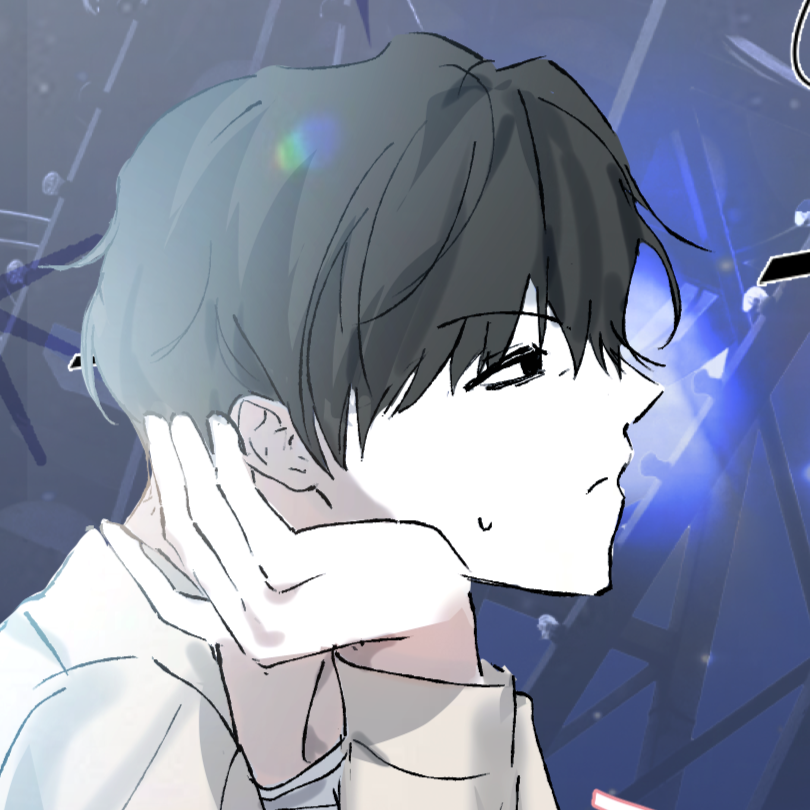
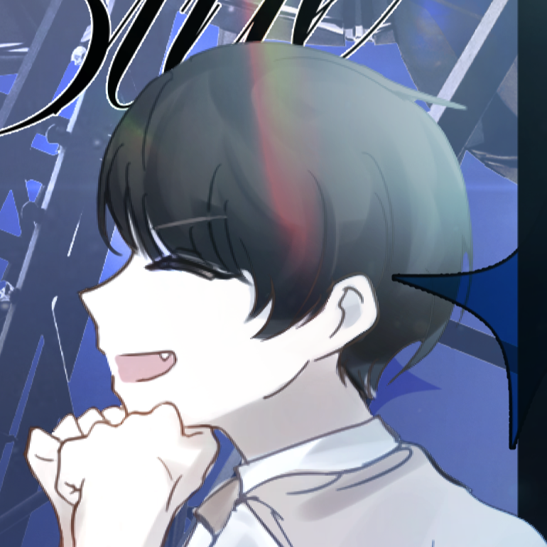

거미줄이 빽빽하게 늘어진 회전목마, 불길한 금속음을 내는 관람차,
중간에 선로가 끊어진 롤러코스터 위로 비가 내립니다.
흥건하게 고인 웅덩이에 비친 것은 영락하고 쇠퇴한 놀이공원의 모습입니다.
사랑스러운 캔디 모양의 마스코트 동상은 목이 꺾여 있습니다.
손에 든 팻말은 이가 빠진 것처럼 철자가 군데군데 없습니다.
〈■■랜드■서 추억■ 만■어 ■세요!〉

… …불길한 예감이 등줄기를 타고 슬금슬금 기어오릅니다.

마침내 어깨를 짓눌러오는 압박감이 상당해, 무심코 한숨을 쉬었을지도 모릅니다.
하긴, 한 번 일어난 일은 두 번도 일어날 수 있습니다.
소지품을 확인한다면 핸드폰과 지갑이 있습니다.

핸드폰은 배터리가 방전된 지 오래라 당장 무엇을 할 수는 없을 듯합니다.
차현안:(머리 박박 헤집기... 지갑도 확인한다.)
지갑 안에는 소량의 현금과 카드 등, 당신이 기억하는 내용물과 크게 다르지 않습니다.
...
하늘만큼은 새파랗게 맑은 가을 하늘입니다.
과하게 날씨가 좋은데, 혹시 문명이 망해 자연이 회복했다는 전개는 아니겠지요… …?
차현안:(............)
차현안:
| 기준치: | 50/25/10 |
| 굴림: | 2 |
| 판정결과: | 극단적 성공 |
낯설지만 익숙한 풍경.
이곳은 캔디랜드라는 확신이 듭니다.
비록 조금 많이 망해있긴 하지만요!
분명 목적지를 월광으로 지정했으니, 이곳으로 이동했단 건 그가 근처에 있다는 뜻이고요.
차현안:(찾아서 등짝을 쳐줄테다)
걸을 때마다 신발 아래에서 버석거리며 밟히는 무언가가 있습니다.
쓰레기군요.
차현안:으... 뭐야?
휘이잉, 바람이 불어오자 회전초처럼 쓰레기들이 뒹굽니다. ..
문득 바람에 날아오는 낡은 신문 한 장을 발견합니다.
<소행성 충돌… 지구는 이대로 멸망하는가?>
차현안:...?
지금으로부터 3년 후의 신문입니다.
빠른 속도로 다가오는 소행성을 도저히 막을 수 없으며,
충돌로 인한 충격에 지진·해일이 발생할 가능성이 크다고 우려하고 있습니다.
다시 빙하기가 오면 지구상의 동식물이 죽어갈 거라는 침통한 내용이 가득합니다.
어쩌면 어떤 동물은 변이를 거듭해 흉측한 괴물이 되어, 소수의 생존자를 위협할 거라는 가설이 한 꼭지에 실려 있군요.
이거… … 진짠가?
차현안:뭐야, 이거... 가짜 아니야?
신문 기사는 과하다시피 집요하게 한 가지 사실을 암시하고 있습니다.
바로 당신이 알고 있는 세계가 이미 망가졌을지도 모른다는 것.
툭, 발이 걸립니다.
또 쓰레기인가 생각했을지도 모릅니다.
무시하고 월광이나 찾으러 가야겠죠, 그 뻔뻔스러운 녀석이라면 이런 곳에서도 멀쩡히 살아 있을 게 분명하다고요.
차현안:(......)(애써 무시...)
그러나 그것은…
차현안:(이런미친)
차현안:
| 기준치: | 40/20/8 |
| 굴림: | 96 |
| 판정결과: | 대실패 |
그때,
불길한 기척을 느껴, 주변을 경계할 필요성을 느낍니다.
차현안:(움찔... 주위 두리번거린다.)
여러 개의 다리는 대다수가 발목이 꺾이고,
발굽이 갈라졌음에도 보행에 지장은 없어 보였습니다.
다가올 때마다 허리 부근이 기묘하게 꿈틀대는 것이 하나의 생물이라곤 조금도 생각할 수 없었습니다.
‘그것’이 입을 벌리자,
살아 있는 생물의 것이 아닌,
기괴하게 찢어지는 비명이 일제히 울려 퍼졌습니다.
차현안:
| 기준치: | 40/20/8 |
| 굴림: | 1 |
| 판정결과: | 대성공 |
뭐, 뭐야 미친...?!
… …마침내 코앞까지 다가온 괴물이 당신을 가로막습니다.
성인 남성의 키 정도라, 이렇게 마주하니 소름 끼칠 만큼 위압적입니다.
더는 도망갈 수 없음을 직감합니다.
그리고 당신을 향해 뻗는 양팔을 무력하게 바라볼 뿐입니다.
창백하게 질린 듯한 새파란 피부는 바람이 불어올 때마다 펄럭거렸고,
공허한 눈은 나무껍질처럼 단단한 질감이었는데,
길게 뻗은 손톱은 묘하게 번들거리는 검붉은 얼룩과 함께 페인트 냄새가 나는 악취가… …
이거 뭔가 이상하지 않나요?
차현안:(......?)
???:“이 괴물! 썩 물렀거라!”
삐용삐용삐용 푸슝푸슝푸슝.
괴악한 효과음과 함께 한 무리의 사람들이 나타납니다.
그들의 옷은 멸망한 도시를 거닐기엔 과하게 깨끗하였으며,
심지어 몇은 깜찍하고 앙증맞은 동물 머리띠를 하고 있습니다.
손에 든 것은 방아쇠를 당길 때마다 홀로그램 불빛이 번쩍이는 장난감 총입니다.
그런데도 괴물에겐 효과가 있었는지,
괴?물:“키에에엑!”
…귀에 거슬리는 소리를 내며 도망갑니다.
새파란 피부 아래 일사불란하게 스텝을 밟는 다리가 어딘지 인형 탈의 그것과 같다고 생각하게 됩니다.
“이걸로 또 한 마리 격퇴!” “바로 다음 구역으로 가자!”
사람들도 줄을 지어 이동합니다.
…
그제야 인간의 백골이 모형이라는 것을,
갈비뼈 안쪽의 반짝이는 것은 누가 버린 껌종이라는 것을 알아차립니다.
차현안:............
팔랑, 바람에 날아오는 빳빳한 새 [전단지]가 당신의 얼굴에 달라붙습니다.
차현안:(한숨 깊게 쉬곤 신경질적으로 전단지 집어들어 본다...)
핸드아웃, [전단지].
차현안:(아오진짜) 왜 하필이면 이딴 곳에 떨어지는데?!
…그러니까 모든 것이 사기라는 뜻이군요.
저쪽에서 상황이 다 끝난 다음에야 울상을 지으며 당신에게 달려오는 월광처럼요.
어째서 그가 하필 여기 있는지는 모르겠지만… …
아, 동물 머리띠는 안 했네요.

어디 갔다가 이제 온 거야... ...
그런데,
당신을 보자마자 금방이라도 울 것처럼 힘껏 끌어안는 게 아니겠어요?
평소보다 목소리도 가라앉았고, 제법 필사적입니다. 호러 영화의 한 장면이라면 그럴싸했겠지만요…
방금 진짜 괴물이 아니라 그냥 놀이공원 캐스트한테 쫄고 오는 참이었다고 말이라도 해줄까요?
차현안:(뚱......)
방청객 웃음소리가 삽입될 장면이라고요.
… …얘 혹시 우는 건 아니겠지?
장난이라도 치는 걸까요?
차현안:뭔데?(;)(밀어내기)
은월장:...!! (상처받은 얼굴!)
차현안:(.........) 또 장난이나 치는 건가? 응?
은월장:아니, 내가, 당신을 얼마나...! (... 그리고, 다시 냅다 다가가서 끌어안으려 든다...) 그간 어디 갔었냐니까?! 갑자기 사라져가지고는...!!
차현안:뭐, 무슨 소리야? 너는 왜 여기에 있는데?!(;;)
은월장:설명하자면 복잡, 아니, 그동안 어디있었냐고! (말안통함) (꽤 전력으로 화내고 있다...)
차현안:어디있었긴, 그야...! (과거에서왔다고말해야하나이걸)
은월장:(울먹이는 눈빛)
차현안:아니, 하......... (한숨... 미간 짚기.) 몰라, 대충 박물관 같은 곳에 있었어. (... ...)
은월장:박물관... ...? (멍하니 허공...) 아니, 내가 당신 찾겠다고 열흘간 이 동네란 동네부터 당신 연고지는 다 찾아보고 다녔는데. 박물관이라니... ...
차현안:......? 무슨 소리야 그게? 열흘? 아니, 넌 그래서 왜 여기 있는 건데? (;)
은월장:... ... 그때 귀걸이를 쓰고, 당신이 갑자기 사라져서... ... 당신을 찾아다니며 온곳을 헤집다가... 또 이곳과 사교도의 정보를 입수한 참이라. (살짝 고개 숙인다...) 연관이 없더라도 올 수밖에 없었어... ... 그런데 당신은, 왜 여기에...! 만나서 다행이긴 하지만!! (다시 끌어안으려 함!)
차현안:으, 아니, 난 하루 동안 있었는데?! (황당...) ... ... 사교도? 또 놀이공원에? 아니, 이놈들은 왜 이렇게 놀이공원을 좋아해? (;;) 아니, 그건 그렇고... (등짝 한 대 칠까 고민...) ... ... 네가 그런 짓을 하자고 해서 이렇게 된 거잖아?! 그래서 내가, 다시 네가 있는 곳으로 돌아온 거라고. 귀걸이 써서. 내가 얼마나 고생을 했는지 알아? (;)
은월장:하루...? (또 멍해짐) 그건 나도 몰라! 길 가다 들은 정보니 진위여부도 확실치는 않지만, 잡을만한 가닥이 이것밖에 없었어서... ... (당신 말 듣자 울먹2배 된다...) 미, 미안. 미안해... ... 내가 왜 그런 걸 하자고 해서... ... 그런데 나도 얼마나 힘들었는지 알아?! (반격) 갑자기 기절했다가 눈 떠보니 몇 시간은 지나있는데 당신은 없고! 당시 상황은 기억도 안나고!! 나라고 당신에게로 이동할 생각을 안했을 줄 아냐고 귀걸이는 묵묵부답에 당신은 전화기도 꺼져서 어디 다친 건 아닌지 나때문에죽어버린건아닌지 얼마나 걱정을 했는, 하... ... (숨참)
차현안:죄다 감방에 넣은 줄 알았는데 뭔, 죽지도 않고...! (깊은 한숨......) 아니, 뭐, 그정도 까지는... (뚱한 표정으로 가만 듣고) 나는 죽을 뻔했거든? 아무튼? 뭐 어찌저찌 해결했지만... (... ...) 하아... ... 됐고, 사지 멀쩡하니 걱정하지 마. 아니, 그나저나... 그놈들 이야기 들으면 경찰에나 신고하지, 왜 또 네가 온 건데?! 뭐 하려고? 그것도 나 없이? 응? 무슨 생각이야, 무기는 있어? (;;) 내가 그놈들일에엮이지말라고몇번을이야기했는데
은월장:나 정말, 또 나 때문에 당신이 위험에 빠진 줄 알고... ... 어떻게든 내가, 구해줘야 된다는 생각으로... (<그래서 첫 위험 때는 튀었다) ... 죽을 뻔 했다고? (눈물 주륵 떨궈진다...) 뭐, 어, 어디 다쳤어?! (당신 옷 붙잡아서 냅다 더듬거리고...) 당신이 잘 해결했다는 말은 전혀 신뢰가 안 가거든?! 일단 빨리 병원부터...!! (...) 그, 그건... ... (깨갱) 하, 하지만. 당신이 여기 있을까봐... ... 결국 여기서 만나기는 했고... 물론 당신이 날 따라온거랬지만, 아니 왜 내가 귀걸이 쓸 땐 작동도 안 하더니... (시선 회피...)
차현안:아니, 왜, 왜 울어? (;;;)(당황... 손 갈 곳 잃는다.) 괜찮, 멀쩡하다고...! (총에 스친 것 같긴 했는데 아무튼) 자, 보다시피 완전 멀쩡하니 걱정하지 마. 사지도 다 잘 붙어있고, 응? 뭐, 총에 스치는 것쯤이야 한두 번 겪은 것도 아닌데... (.........) 왜. 내가 갑자기 쓰러지기라도 할까 봐? 응? 멀쩡하다고, 멀쩡. 사람 말 좀 믿어. 내가 경찰 생활만 20년은 넘게 했다는 걸 잊은 건 아니지? 식은 죽 먹기였다고. (...) 그래, 내가 널 따라왔으니까 그렇지. 일 해결하느라 시간 좀 걸린 거고. ... 나한테는 하루였지만. 아니, 하루도 아니고 고작 몇 시간이었는데... (뚱......)
은월장:내가, 당신을 얼마나... ... (눈물줄줄... 흐르다가 제 소매로 눈 벅벅 문지르고.) ... 총 맞을 뻔 했구나? (정색...) 허... ... 그래서 대체 어디 박물관에 갔던 거야? 뭘 하면 박물관에서 총을 맞을 뻔 해? 내가 당신 찾아다니고 사교도 따라가는 동안 당신은 박물관 강도 쫓기라도 했나?! (...) ... 거짓말 아니지? 설마 귀걸이에 문제가 생겨서, 순간이동이 아니라 10일 배송이 되어버렸다거나... 아니, 안 되겠다. 당분간 당신 만나러 갈 때도 귀걸이는 쓰지 말아야겠어... (제 귀걸이 주머니로 옮기며...)
차현안:(어쩔 줄 몰라 하기;;) 아, 아니, 그래도 멀쩡하거든? 내가 경찰 생활만 몇 년을 했는데, 총 쏘는 놈들 한둘 본 줄 알아? 사교도 따라가는 게 더 문제 아닌가? 응? 나는 내가 찾아간 것도 아니었다고. 뭐, 어쩌다 보니 휘말린거지...!! 쫓은 게 아니라 쫓긴 거라고, 아무튼. 너는 뭐, 지금 스스로 위험을 자초하고 있는 꼴 아닌가? (...) 내가 왜 이런 거로 거짓말을 하겠어? 진짜, 나한테는 고작 몇 시간이었다고. 내가 얼마나 고생해 가며 최대한 빨리 돌아왔는데...!! 뭐, 귀걸이를 너무 많이 써서 과부화라도 왔다거나? (;) (하아... ...) (그러고보니 내 귀걸이는 어디 있지... 뒤적.)
귀걸이는 당신 품에 잘 있습니다.
차현안:(안심)
마지막으로 썼을 때와 동일한 위치입니다.
은월장:그러다가 훅 간다?! 당신, 사교도와 경찰을 동시에 대치한 괴도도 아니면서 나보다 명줄 짧아 버리면... 괴도 복직할 테니 말리지 마시죠. 당신 이름 걸고 활동할 거야. (복?수) 쫓은 게 아니라 쫓긴...? 거여도 되는 건가? 당신이 박물관 털기라도 했어? 그러니까 대체 무슨 일이... (...) 윽... 그래, 내가 미안해! 아무튼 당신 만났으니 이제 혼자 움직이는 것도 아니잖아?! (변명!) 하여간 어떻게든 돌아오긴 했으니 다행이지, 그치... ... 더 빨리 오지 그랬어. (못 할 걸 안다. 그냥 책임전가 화풀이...)
차현안:뭐, 뭐? 뭐라고?! (;;;) 괴도 복직? 그딴 거 하기만 해봐, 진짜 아주그냥 바로 감방에... 내 이름은 왜 거는데?! (혈압!) 내가 아직까지 멀쩡하게 잘만 살아있는데, 뭐? 괴도는 무슨... 나는 온갖 흉악범이라는 놈들 죄다 만나고도 멀쩡하게 살아남았거든? 누구 앞에서 그런 소리를 하는 거야? (하아...) 몰라, 몰라. 대충 사정이 있었어. 어쩔 수 없었다고. (... ...) 그러면 된 거냐고! (;;;) 아니, 하... ... 이걸 다시 집으로 돌려보낼 수도 없고. 사교도들만 찾으면 경찰에 신고하고 빠지는 거야. 알겠어 (.........) 나는 최대한 빨리 온 거거든?
은월장:그러니까 일찍 죽기만 해보시라고. 그때는 나 감옥 넣어줄 주인공 형사님도 없을 텐데, 내가 왜 잡혀야 하지? (자신감) 그래, 그러니까 오래 좀 살아! 몸도 사리고! 역시 이번 일만 끝나면 출퇴근 왕복 시간이 늘더라도 당신 집에 다시 얹혀 살아야겠어... ... 영 걱정돼서 못 살겠다니까, 참. (... ...) 왜 계속 안 알려주는 거야?! 나는 당신 뭐하나 걱정으로 열흘을! (반복) 예에... 이참에 저랑 할로윈 기분도 좀 내시죠. 오랜만에 놀이동산까지 왔는데 옆에 사람도 없이 혼자에다가, 남들 다 웃으면서 즐기는데 나는 계속 걱정만 하고있자니 더 우울해졌다고. 당신이 보상해야 돼. (왜)
차현안:안 죽는다니까?! 내가 왜 죽는데? 난 아주 오래 살거야. 바빠 죽겠는 와중에 제대로 쉬지도 못하고 내가 죽을 것 같아? (;;) 안 돼. 억울해서라도 못 죽어. 나는 떵떵거리면서 놀고먹다가 죽을 거야. (......) 못 잡힐 것 같나? 응? 너 잡을 형사는 나 말고도 널려있거든? 그러다가 아주 큰코다쳐봐야지... (악담) 아니, 뭐? 내 의사는? 이건 무슨 관련인데? (;;;) 아니 대충, 뭐 사정이 있었다고...! 몰라도 돼. 궁금해하지 마. 어른의 사정이야. (........) 그러게 누가 놀이동산을 사교도 잡으러 오는데?! (우리가) 어휴... ... ... (.........) 됐고, 여기 뭐가 맛있더라. 고생했더니 당 땡기는데.
은월장:진짜지? 내가 두고 볼 테니 거짓말이기만 해봐. (협박) (그래도 나름 마음은 풀렸다... 슬 눈물도 말랐고, 웃는 얼굴.) 큰 코 다치려면 다시 괴도 돼야 하는데? (농담) 아니, 내 나이가 이제 스물보다 서른에 가까운데 어른의 사정 같은 말을... (...) 흠, 당 땡긴다고? 여기 먹을 게... ... (아.)
월광은 그새 얼굴색을 바꾸고 헛기침하더니,
은월장:(연기톤) 드디어 깨어났구나, 차현안 씨! 당신이 쓰러진 지 어언 10년... ... 그 사이 지구엔 운석이 떨어져 세상이 한 번 멸망하고, 지금은 포스트-아포칼립스 시대야. 당장 내일 먹을 식량도 없답니다♥
원래의 페이스를 발휘합니다.
별도 판정을 할 필요도 없이 전부 거짓말이군요.
그래도 기운을 찾아서 다행인 걸?까요?
차현안:(.........)
은월장:하지만 걱정 마! 내가 그 돈 받는 괴물들과 맞서 당신을 지킬 테니까. 제 총이 맞추지 못하는 건, 이 세상에 없거든요. (아직 심취)
차현안:뭔데, 그 이상한 연기는?
은월장:조용히 해봐. (ㅎㅎ)
차현안:(;;;)
그러면서 장난감 총의 총구를 후, 부는 흉내까지 냅니다.
은월장:과연 실패의 아이콘 사교도가 이번엔 무슨 음모를 꾸몄는지 보자고요.
살짝 유행이 지났지만, #가보자고 입니다.
차현안:(하...........)
핸드아웃, [구스범스존 가이드].
차현안:(벌써 지침)
요약하자면, 안 맞고 잘 쏘면 되는 서바이벌입니다.
오가는 사람들도 몇몇을 제외하면 적당히 즐기는 분위기네요.
월광이 당신 몫의 레이저 건을 건넵니다.
그립감은 전혀 다른 느낌이지만, 사격이라면 꽤 자신 있죠?
은월장:한 바퀴를 다 돌면 끝이야. 원래의 캔디랜드를 축소해서 꾸며둔 것에 불과하거든.
어트랙션을 탈 수는 없지만, 그래도 꽤 볼 만하다는 이야깁니다.
차현안:... 이런 걸 굳이 해야 하나?
은월장:재밌을 것 같지 않아? 뭐, 것도 그렇고... 당신도 방금 당했다시피, 그냥 돌아다니는 것만으로 직원들이 습격하니까 최소한의 대비는 해야할 거야. (...)
차현안:(........)(피곤...)
또 총을... (중얼)
은월장:(살짝 갸웃)
차현안:아니야.
은월장:(뭐지) 아, 이건 보조배터리. 설마 핸드폰이 열흘을 버티진 않았지? 빨리 충전하고 앱 깔아. (건넨다.)
차현안:아니, 난 몇 시간이었다니까. 방전되긴 했지만... (일단 충전한다...)
은월장:(메신저로 앱 링크도 보내줌)
차현안:(내가이런걸왜)(일단 깐다...)
핸드아웃, [앱].
상시 화면에 켜두는 것을 추천합니다.
차현안:음, 일단 지도나 볼까... (꾹)
구스범스존의 지도가 팝업됩니다.
캔디랜드를 작게 줄인 모양이군요.
가볼 만한 장소는… … 롤러코스터, 회전목마, 바이킹, 회전컵, 선물 가게, 푸드코트, 관람차, ??의 집입니다.
물론 게임존과 간식부스도 갈 수 있고요. (조사 정보x)
현재 위치는 회전목마 근처입니다.
차현안:(간식부스)
은월장:(뭘원하는지벌써알것같다)
차현안:당 땡기는데... (빤히)
은월장:호러 테마에 오자마자 간식부스로 직행하는 건 우리밖에 없을 거야. (...) 다른 버튼도 눌러 보지 그래?
참고로 버튼은 [ 지도 ] [ 도감 ] [ 보상 ]가 있었습니다.
차현안:일단 가도 문제는 없잖아. (다른 건 모르겠고 뭐 먹고 싶은데... 투정 부리며 도감 버튼 누른다.)
몇 개의 실루엣이 떠 있습니다.
유일하게 공개된 [푸른 기수]는 당신이 조금 전 만났던 개체입니다.
어쩐지 게임 같네요!
차현안:그거 이름이 푸른 기수였나... (못마땅... 일단 확인해 본다.)
은월장:무슨 근처에만 있어도 점수가 깎이네. (빤히)
차현안:뭐 이런 게 다 있대.
은월장:(냅다 당신에게 손 뻗어서 보상 버튼 누르기)
차현안:뭐야?
은월장:(오.)
바로 다음 단계의 보상은 500점으로,
간식 10% 할인권을 받을 수 있다고 합니다.
간식을 먹으려면 테마존 밖으로 나가야겠지만요!
차현안:(오)
그 외에도 다양한 보상이 준비되어 있습니다.
월광과 포인트 내기를 할 수도 있겠어요.
차현안:(살짝의욕생김)
은월장:(무슨생각하는지눈에선하다)
차현안:그래서, 걍 이대로 돌아다니면서 쏘면 되나? (총 고쳐잡...)
은월장:흐흠, 아마도. 몇 점까지 도달할 수 있으려나! (총 고리에 손 넣고 빙글빙글...)
조금 전의 절박함은 온데간데없고, 그저 놀이공원을 즐기는 방문객처럼 보이네요.
뭐, 하긴요.
이놈과 캔디랜드에 온 것도 오랜만이고…
사교도 의심도 의심이지만, 잠깐 정도는 즐겨도 괜찮을 겁니다.
은월장:일단 어트랙션은 회전목마가 가장 가깝던데. 어떡할래?
차현안:일단 가지, 뭐.
은월장:(벅뚜벅뚜) (주변에 괴물 있나 확인하며...)
차현안:(벅저벅저)(두리번 거리고...)
회전목마에는 성한 말이 거의 없다시피 합니다.
한때는 알록달록 칠이 되어 아름다웠을 말들도 지금은 바래고 녹은 도료에 엉망입니다.
무채색 회전목마라니요!
몇 개 안 되는 [마차]도 마찬가지입니다.
차현안:(구경)
다리가 부러져 흔들거리는 말 사이를 월광이 기웃거립니다.
은월장:이거 함부로 탔다간 망가지겠는데. (기웃)
차현안:... ... 안전 문제 괜찮은 거 맞아? 탈 수는 있는 건가?
은월장:흐흠, 타지 말라고 만든 거지. 그냥 조형물.
타볼래? 저기 마차. (ㅎㅎ)
차현안:너나 열심히 타.
은월장:(칫) (대신 마차 기웃기웃...)
기웃2거리던 월광이 멈칫합니다.
은월장:여기 좌석 아래에 이상한 게 있어.
차현안:응? 뭐. (따라서 보기...)
절단면이 우둘투둘하게 깨진 말의 왼쪽 다리였습니다.
발굽은 검은색, 다리 일부분은 갈색으로, 아마 갈색 회전목마에서 떨어져 나온 부분이겠지요.
차현안:다리네. (감상 끝)
은월장:그게 다야?!
아니, 뭔가 이상하잖아. (다리 들고, 무언가 맞춰보라는 듯 기대 눈빛...)
차현안:...... (갸웃)
은월장:(점점 입꼬리 올라가고...) 여기 말들은 전부 희거나 검거나 회색이라... 갈색 말이 없어. 그렇다면 이 다리는 누구의 것이지?! (괴담채널 어투)
차현안:도색 빠트렸나 보지. (관심없딘)
은월장:(뚱) 재미 없어
차현안:...... 무슨 반응을 해야 하는 건데?
은월장:무섭지도 않아?! 이거 완전 국룰 소재인데. (...)
차현안:하나도.
은월장:(칫)
그런데,
수상한 말의 다리를 유심히 바라보면...
조금 전에 놓쳤던 문양이 눈에 띕니다.
적갈색의 오망성 문양입니다.
은월장:(오.) 이건 진짜 괴담 소재...! (신남)
차현안:이건 뭐야?
음, 이스터에그 라거나. (......)
은월장:그러게. 이런 걸 SNS에 홍보한다거나? 어그로성 릴스.... (...) 음?
... 이거 질감이 말라붙은 피 같은데.
차현안:...? 뭐?
(자세히 본다...)
어떤 기시감을 느낍니다.
마차 주변엔 사람들도 없어, 그야말로 조용한 스팟.
포인트와는 관련이 없는지 앱은 조용합니다.
월광과 시선을 교환합니다.
차현안:... ... ... 부술까?
은월장:... ... (끄덕.) (다리 당신에게 넘긴다.)
차현안:(으...)(부수기)
퍼석 소리와 함께,
말의 다리는 쉽게 부러집니다.
동시에, 오망성 문양이 흐려지며 지워져 버리는군요.
은월장:... 무언가 부여돼있던 게 맞네. 그럼 이게 매개체인가?
차현안:일단 그놈들이 여기 있는 건 확실하고. 이건... 무슨 역할이람.
은월장:일단 더 찾아볼까. 몇 개 더 찾고 나면 추론이 되겠지.
차현안:그래.
다음은... 어디로 가지. (간식부스 미련)
은월장:... ... (왜 어디로 가고 싶어 하는지 알 것 같지)
지직, 지지직―
다음 장소로 이동하려 할 때입니다.
어디선가 노이즈가 잔뜩 낀 기계음이 들려옵니다.
가로등과 같은 설치물에 띄엄띄엄 달려 있던 스피커입니다.
몇 번의 노이즈가 끝난 후, 다소 평탄한 목소리가 흘러나옵니다.
“잠시 후 3시부터 구스범스존에서 몬스터 퍼레이드가 시작됩니다. 퍼레이드 시간에는 괴물이 날뛰지 않으며, 생존자 여러분의 포인트도 가산되지 않습니다. 모쪼록 퍼레이드를 즐겨주시기를 바랍니다. 감사합니다.”
은월장:(앗)
차현안:(음)
은월장:그거 알아? 퍼레이드 때는 길이 봉쇄되는데... (간식 부스 못 간다는 말)
차현안:(.........)
은월장:뭐, 잠시 구경하고 가지. (ㅋㅋ)
차현안:에이... (아쉽미련)
기괴하지만 흥겨운 할로윈 음악이 구스범스존을 뒤덮습니다.
사이사이 튀는 글리치 음이 오싹함을 더해주는군요.
전투에 집중하던 사람들도 어느새 길가에 서, 상당히 북적이는 무리가 되었습니다.
퍼레이드에 그다지 좋은 기억은 없는 것 같다만… …
은월장:뭐, 이번엔 중간에 도망갈 일도 없을 테니까. 좋은 자리 차지해둘까? (중비어있는 쪽 손가락질하며.)
차현안:딱히 상관은 없지만... 뭐.
월광은 깨지고 금이 간 타일을 걸어가며 적당한 자리에 멈춥니다.
은월장:저쪽, 중앙부터 오나 봐! (벌써 좀 신남)
??의 집이 있는 곳부터, 괴물들의 행진이 시작됩니다.
가장 앞에서 손을 붕붕 흔들고 있는 건 조금 전에도 만났던 푸른 기수입니다.
차현안:(어쩐지 좀 피곤...)
그 뒤를 따르는 건 익숙한 모양새의 좀비들이군요.
소위 클래식한 좀비로, 좀비 분장을 한 연기자들이 노력하고 있습니다.
휴대폰의 앱이 깜박이며 반응합니다.
도감이 갱신됩니다.
차현안:(오.)
망자들은 다양한 옷을 입고 있어 보는 것도 즐겁습니다.
교복을 입은 망자, 놀이공원 동물 머리띠를 쓴 망자, 중세 시대에 어울릴 법한 드레스를 입은 망자도 있습니다!
눈이 마주칠 때마다 잡아먹을 것처럼 뾰족한 이를 보여주는 게 제법 귀여울수도… …
당신에겐 어떤가요?
차현안:(관심없딘)
은월장:와, 쟤 귀엽다. (ㅎㅎ)
망자가 지나간 후엔 퍼레이드다운 거대 마차가 몇 개 나타납니다.
색이 바랜 호박 마차 위에서는 호박 요정 옷을 입은 망자가 손을 흔들고,
처형장으로 향하는 죄수 마차에는 철창에 갇힌 망자가 괴성을 지릅니다.
마차 위에는 길로틴까지 구현되어 있네요!
피 묻은 억새밭과, 허수아비 마차까지.
은월장:(몰입해서 보는 중...)
차현안:(팔짱 끼고 구경)
퍼레이드의 중간부터는 친숙한 동서양 분장 괴물도 나타납니다.
구미호, 뱀파이어, 미라, 강시, 꼬마 마녀... ...
“사탕을 주지 않으면 괴롭힐 거야!”
더러운 천을 뒤집어쓴 유령이 신나게 뛰어갑니다.
펄럭이는 천 안쪽으로 깡마른 다리가 설핏 엿보입니다.
어라?
방금 보인 다리가 세 개 아니었나요?
차현안:...? (눈 비비적)
차현안:
| 기준치: | 75/37/15 |
| 굴림: | 20 |
| 판정결과: | 어려운 성공 |
아니, 마지막 다리는 다리라기엔 너무 딱딱하고 우둘투둘한… …
꼬리처럼 보였습니다.
은월장:오, 분장인가? (흥미!)
차현안:퀄리티가 좋네.
하지만 이미 천을 뒤집어썼는데 또 분장할 필요가 있나요?
꼬리를 가진 유령을 목격한 후, 퍼레이드의 후반을 보면…
더욱 신경 쓰이는 것들이 잔뜩 나오는군요.
저 푸른 기수 하나는 움직일 때 다리와 다리가 너무 매끄럽게, 마치 한 몸처럼 동작하는 것 같아요.
은월장:오... 연기 잘 하네. 연습 얼마나 했으려나. (흥미.)
차현안:퀄리티가... 좋네.
저기 망자는 머리 위쪽 절반이 없어져 뇌가 드러났는데도 분장처럼은 느껴지지 않습니다.
은월장:오... ... 분장이... (흥미...)
차현안:퀄리티가... ... 어떻게 한 거야? (;)
네 발 도마뱀의 모습을 한 마차가 남몰래 눈을 깜박이고,
입맛을 다시는 모습까지 본다면… …
은월장:... ... ... 잠깐.
차현안:.........
은월장:허, 이거 큰일이... ...
월광의 말이 맞습니다.
은월장:이미... 의식에 성공한 건가?
퍼레이드가 끝나고, 사람들이 흩어집니다.
도로 중간에 신발 하나가 떨어져 있습니다.
끈이 풀린 운동화는 그 안쪽에 찐득찐득한 혈액이 가득 차 있군요.
보고 있는 동안에도 넘치며 흘러 불길한 얼룩을 남기네요.
어쩌면, 어디선가,
차현안:젠장...! 어디 숨어있는 거야?!
그때,
차현안:
| 기준치: | 42/21/8 |
| 굴림: | 47 |
| 판정결과: | 실패 |
어깨를 두드리는 손을 느낍니다.
차현안:...? (돌아본다.)
뒤를 돌아보면,
‘길 잃은 망자’ 하나가 끄으으으, 하며 당신을 공격하려는 참입니다.
핸드폰이 진동하는 것으로 보아 포인트를 잃은 듯합니다.
차현안:윽, (이럴 때가 아닌데...!)
은월장:차현안 씨, 피해!
차현안:(일단 피한다...)
월광이 망자의 머리에 레이저 건을 겨눕니다.
삐용!
도감의 설명처럼, 머리를 맞추니 쉽게 격퇴되는군요.
은월장:아싸 내 포인트. (..........)
차현안:(.........)
은월장:뭐, 장난이고... ... (으쓱.) 잠시 당신 총 줘봐.
차현안:... 그래. (건넨다.)
월광은 자신과 당신의 장난감 총 총구에 장치 하나를 붙입니다.
은으로 만들어진 작은 고리로, 레이저가 발사될 때 고리를 통과하는 구조입니다.
은월장:혹시나 해서 챙긴 건데, 이계에서 넘어온 진짜 괴물들을 상대할 땐 이게 유용할 거야. 보통의 무기에 해를 입지 않는 존재라면... ... 이걸로 우회할 수 있거든.
차현안:......? (빤히)
은월장:흐흠, 왜 그래? 내 철저한 준비성에 감동했나? (ㅎㅎ)
차현안:이런 건 또 어디서 구한 거야? (;)
은월장:괴도의 사정. (^^)
차현안:이제 관뒀잖아?!
은월장:하지만 그때 챙겨둔 건 계속 있으니까. 귀걸이도 그렇고. (그러고 보니 박물관 출처다...)
차현안:(.........)
은월장:돌려놓으란 말은 안 할 거지?
차현안:(한숨.........)
은월장:뭐, 아무튼! 조심하고 다니자고요, 그놈들 물증 잡기 전까지.
차현안:그래, 뭐... 퇴장당하면 안 되니까.
이제부터 휴일은 끝.
본격적인 사교도 조사 시작입니다.
차현안:(내휴일)
은월장:그래서... ...
간식 부스? (...)
차현안:(......)(솔직히좀가고싶음)
은월장:뭐, 어차피 한 바퀴 돌아야하니까. 아님 이참에 밥 먼저 먹고 갈까? 푸드코트 가서.
차현안:그래. (표정 밝아짐)
은월장:(어떻게이정도로솔직한얼굴이)
차현안:(ㅎㅎ)
푸드코트는 지대가 낮아, 흡사 지하 주차장처럼 보이는 입구로 진입해야 합니다.
완만한 내리막길을 따라갈수록 흥건하게 물이 고인 아래가 보입니다.
이런 곳에 정말 뭐가 있을까요?
차현안:... 위생은 괜찮겠지?
은월장:음식 장사 하면 안 될 것처럼 생겼는데... (...)
뭐, 컨셉만 할로윈이니까.
차현안:
| 기준치: | 10/5/2 |
| 굴림: | 57 |
| 판정결과: | 실패 |
드르르륵... ...
사이렌이 울리며 셔터가 내려갑니다.
은월장:(잠깐)
차현안:뭐, 뭐야,
저 안쪽에서 다수의 벌레가 다가오는 소리가 들립니다.
셔터가 완전히 닫히기 전에 도망가요!
차현안:(아니뭐이런게)
차현안:
| 기준치: | 85/42/17 |
| 굴림: | 50 |
| 판정결과: | 보통 성공 |
다행히 갇히기 전에 빠져나올 수 있었습니다.
함정... 이었을까요?
은월장:아니, 이래서야 사람들 밥은 어떻게 먹으라고...! (...)
차현안:(;;;) 빨리 먹으러 가기나 하자...
은월장:간식으로 배 채워야겠네. (당신 힐끔 봄) (좋은 건가)
차현안:(좋음)
간식 부스가 눈에 들어옵니다.
당신에게 기쁜 소식이 있다면,
도넛, 솜사탕, 츄러스, 구슬 아이스크림 등등에 각종 음료수까지!
메뉴가 그때와 크게 달라지지 않았다는 것이겠군요.
차현안:(표정밝음)
다만 당시엔 발렌타인데이 테마, 지금은 할로윈 테마이다 보니…
디자인만 조금씩 바뀌었습니다.
보라색 글레이징 도넛, 화이트 초콜릿으로 그린 거미 등등.
은월장:뭐 먹을 거야? (어쩐지 데자뷰)
차현안:음... ... (다)
은월장:(...) 하나씩 다 주세요. (됐지? 하는 표정)
차현안:(^^)
물론 슬픈 소식이 하나 있다면…
초코 분수는 발렌타인 기념이었거든요.
초코 드리즐 라떼도 웬 할로윈 음료로 바뀌었군요.
차현안:(내 초코)
은월장:오, 새로운 음료가 생겼네. ‘뱀파이어 밥’? 그것도 하나 주세요. (ㅎㅎ)
차현안:(ㅠㅠ) 뭐야 그건?
시뻘건 음료 한 컵에 빨대 두 개가 꽂힙니다.
곧 커다란 박스에 푸짐하게 각종 간식들이 놓입니다.
그때보단 낫지만, 여전히 척 봐도 혀가 마비될 것 같은 비주얼… …
간식을 받고 나면 마침 옆에 빈 테이블도 보입니다.
잠시 정비하고 가는 것도 나쁘지 않겠어요.
차현안:음, 저기 앉을까.
은월장:좋네. 어쩐지 옛날 생각도 나고? (박스와 음료 내려놓으며...)
차현안:(옛날 생각...)(무시)
은월장:(ㅎㅎ)
오, 이거 토마토 쥬스 맛이다. (뱀파이어 밥)
차현안:음, 그래? (다른거먹어야지)
은월장:이번엔 초코 분수도 안 끼얹었으니, 나도 더 많이 뺏어먹을 수 있겠는데. (농담)
차현안:(째릿)
은월장:(재밋다) 농담. 다음으로 어디 갈 건지나 생각하지?
차현안:음... (우물우물) 어디 가지. (우물우물)
은월장:(간식생각밖에안하는것같은데)
차현안:오, 이거 맛있... (우물우물...)
은월장:(뺏)
차현안:뭐야?!
은월장:나도 배 채워야지. (ㅎㅎ) (두 입 먹기)
차현안:내 거거든?! (;;)(다시 뺏)
은월장:앗. (덩그러니...) 그럼 당신이 한 입 줘. 허락 맡고 먹는 건 괜찮잖아?
차현안:......... (뚱...)
은월장:(빵긋기대기다림) (부담스럽게 바라본다...)
차현안:(.........) 싫은데.
은월장:(ㅠㅠ)
거 참 너무하네... (뱀파이어 밥 흡입하기...)
차현안:(못마땅하게 바라보며 우물우물)
이미 두 입이나 먹어놓고.
은월장:당신은 앞으로 몇십 입정도 남아있잖아.
차현안:그게 무슨 상관이야? (우물2)
은월장:너무해라~ (재밌어함)
차현안:(;;)(우물우물)
은월장:(그래서 진짜 어디가지... 앱 지도 본다.) 다음은 가까운 롤러코스터로 할까?
차현안:음, 그럴까. (먹느라 바쁨...)
은월장:분명 전에도 길을 내가 다 정했던 것 같은데. 내게 책임이 너무 막중한 것 아닌가? 응? (먹는사람방해)
차현안:(듣지않음모르는일)
오, 이거 맛있네.
은월장:(손 슬금슬금슬금)
차현안:(경계)
은월장:(ㅋㅋ) 간식 박스 들어줄 테니 어서 다음으로 가자고요. 그건 다 삼키고!
차현안:(못마땅한 표정으로 보다가...) ... 그래. (우물)
은월장:(일어나서 롤러코스터 쪽으로 이동) (간식박스 들어준다.)
차현안:(하나만 더 집고 우물거리면서 가기...)
롤러코스터로 이동합니다.
캔디랜드의 롤러코스터와 비교하면 아주 작고 초라한 어트랙션입니다.
360° 도는 구간도 없고, 떨어지는 구간도 하나뿐이거든요.
롤러코스터라기보단 조금 무서운 모노레일과 같은 형태입니다.
물론 어차피...
선로는 중간에 끊긴 채고, 차량도 반파되어 이용할 수 없지만요.
차현안:여기엔 뭐 없나. (두리번)
차현안:
| 기준치: | 75/37/15 |
| 굴림: | 57 |
| 판정결과: | 보통 성공 |
끊어진 선로 끝에, ‘동그란 물체’가 걸려 있는 걸 확인합니다.
가까이에서 보기 전까지는 정확히 어떤 물체인지 판단할 수 없겠습니다.
저길... 어떻게 다가가죠?
차현안:... 저건 뭐지? (가리킨다.)
은월장:흠? (반눈 뜨고 째릿...) 잘 안 보이는데.
... ... 몰래 선로 위로 갈까? (...)
차현안:... ... 그러다 걸리면?
은월장:산책 중이었다고 연기...
차현안:선로 위를?
은월장:길을 잃었다거나. (...)
차현안:선로 위를? (;)
은월장:(...)
차현안:......
하지만 방법은 정말 저것뿐이군요.
차현안:에이 씨... 안 걸리면 되지. (......)
은월장:흐흠. 여기 전직 괴도와 현직 형사가 있는데 과연 들킬까! (........)
차현안:(선로위를걷는데)
선로로 올라가는 층계엔 ‘길 잃은 망자’ 하나가 기다리고 있습니다.
은월장:(총 고쳐 잡는다.) 대처법은 기억하고 있지, 형사님?
차현안:그래. (총 겨눈다.)
차현안:
| 기준치: | 70/35/14 |
| 굴림: | 55 |
| 판정결과: | 보통 성공 |
푸슝!
포인트 +10.
무사히 선로에 도달했더라도, ‘동그란 물체’까지 가는 건 쉬운 일이 아닙니다.
은월장:흐흠. 그래도 이제 믿고 맡겨도 되겠는걸. 사실 단순 반응 속도는 당신이 더 나을지도 모르니까... (슬금슬금 선로 타기...)
차현안:내가 총만 몇십 년을 잡았는데. (따라서 선로 위로...)
은월장:그치. 그것도 반동까지 있는 총을 그렇게... (슬쩍 밑 봤다가...) 오. 생각보다 높이 올라왔는데? 당신은 바닥 보지 마. (...)
차현안:내가 경찰 생활만 몇십 년을... (.........)(앞만보고 벅저벅저)
그러나 아래를 보지 말라는 말을 들으면 보게 되지 않나요?
안전망도 없는 아득한 저 아래… …
…어서 이동해야겠어요.
차현안:(애써 무시하고 벅저벅저...)
중간 정도 걷다 보면 머리 위에 그림자가 드리워집니다.
날개 치는 소리와 함께, 고약한 냄새가 풍겨오는 그림자를 직시하면,
휴대폰의 앱이 깜박이며 반응합니다.
차현안:뭐, 뭐야? 뭐 이런 곳에 있어? (;;)
도감의 사진보다 훨씬 위협적인 하르피아가 울부짖고 있습니다.
게다가 어떤 장치도 없이 활공하고 있군요.
아,
설마… …
…순간적으로 ‘위험하다’는 확신이 온몸에 퍼집니다.
저 날카로운 발톱에 맞았다간 추락하고 말 거예요.
차현안:(이런미친)
이성 판정 0/1.
차현안:
| 기준치: | 40/20/8 |
| 굴림: | 17 |
| 판정결과: | 어려운 성공 |
차현안:
| 기준치: | 70/35/14 |
| 굴림: | 74 |
| 판정결과: | 실패 |
(윽;)
하르피아의 날선 발톱이 당신의 팔을 훑고 지나갑니다.
체력 1D3 차감.
차현안:=
rolling 1d3
()
1
1
10 포인트도 잃었습니다!
차현안:진짜인데 왜 포인트가 줄어드는 거야...?!
은월장:기업의 횡포인가...?! (...)
차현안:
| 기준치: | 70/35/14 |
| 굴림: | 78 |
| 판정결과: | 실패 |
하르피아의 날선 발톱이 어깨를 무겊게 짚습니다.
체력 1 차감.
역시 10 포인트도 잃었습니다...
차현안:(;;)
이대로면 구스범스존에서 쫓겨나겠는데요! (아직 70점)
차현안:젠장...
은월장:내가 한 번 해볼게. (총 겨눈다.)
| 기준치: | 60/30/12 |
| 굴림: | 22 |
| 판정결과: | 어려운 성공 |
날개에 적중합니다.
이제 2회 남았어요!
은월장:이번에도 내가...!! (자신감 붙음)
차현안:(;;;)
은월장:
| 기준치: | 60/30/12 |
| 굴림: | 50 |
| 판정결과: | 보통 성공 |
아쉽게 날개 끝만 비껴나가는군요.
차현안:
| 기준치: | 70/35/14 |
| 굴림: | 43 |
| 판정결과: | 보통 성공 |
(아오)
이번에도 빗맞았습니다!
차현안:.........
둘을 합산해서 1번 더 맞은 걸로 칩니다.
이제 1회 남았어요.
차현안:
| 기준치: | 70/35/14 |
| 굴림: | 76 |
| 판정결과: | 실패 |
이게 왜 이러지. (.........)
은월장:(어쩌지)
오히려 장난감 총이라 손에 덜 익은 거 아니야?
차현안:음, 그런가. (;;)
하르피아가 당신의 다리를 한 번 치고 지나갑니다.
10 포인트를 또 잃었습니다...
은월장:(안되겠다) (다시 총 듦)
| 기준치: | 60/30/12 |
| 굴림: | 53 |
| 판정결과: | 보통 성공 |
(아오)
차현안:
| 기준치: | 70/35/14 |
| 굴림: | 26 |
| 판정결과: | 어려운 성공 |
(드디어)
어쩐지 피슝 대신 탕 소리가 난 기분입니다!
하르피아가 격퇴됨과 동시에 포인트 30을 획득합니다.
차현안:(원상복귀)
선로 끝에 놓인 동그란 물체에 다가갑니다.
이건… …
겉보기론 타조알처럼 생겼군요.
… …이지만, 피로 그린 오망성 문양은 없고요.
선로까지 올라왔는데 소득은 제로입니다.
차현안:......... (혈압) 뭐 알을 이런 곳에 둬...?!
은월장:이것 때문에 여기서 경계 중이었나 보네. ... 기념품으로 들고 갈래? (...)
차현안:들고 가서 뭐 할건데? (;)
은월장:기념품들이 으레 그런 법이지. 그때의 기분을 간직한 트로피? (... ...)
차현안:(........) 목숨을 위협당한 기분?
은월장:아무튼 이기긴 이겼잖아? (냅다 들고 당신에게 넘기기)
차현안:(으)
이제 천천히 선로를 내려갑시다.
다행히 더이상의 괴물도, 경비 직원도 없군요.
차현안:(못마땅한 표정...)
은월장:이 다음은 어디로 갈래? (벌써 지친 기분이지만)
차현안:뭐... 가까운 곳이나 갈까.
은월장:가까운 곳이... (당신 휴대폰으로 냅다 지도 누르기)
흠... 관람차?
차현안:마음대로 해.
은월장:흐흠, 원래 관람차는 마지막으로 가야 하는데. 야경도 구경하고... (추억 새록새록) (물론 관람차 쪽으로 걸으며...)
차현안:뭐 어쩌자는 거야? (;;)
은월장:어차피 여기 어트렉션들은 전부 '탈 수 없는 상태'가 컨셉이잖아. 그러니 딱히 마지막일 필요가 없어진 거지. (무언가의 놀이동산 신념)
차현안:(뭔상관이지) ... 그래.
작은 관람차는 움직이지 않은 채 멈춰 있습니다.
몸체에 큰 거미가 달라붙어 있기 때문입니다.
끈끈한 거미줄이 몇 겹으로 뻗어 있는지, 멀리서 보는 관람차는 그저 하나의 거대한 덩어리입니다.
휴대폰 앱이 깜박거리며 반응합니다.
차현안:... 설마 이것도 진짜는 아니겠지... ...
은월장:설마... ...
뭐, 일단은 처리해볼까? 진짜가 아니더라면 포인트나 얻는 거고. (총 들기!)
차현안:(한숨...) 굳이? (일단 총 든다...)
차현안:
| 기준치: | 70/35/14 |
| 굴림: | 31 |
| 판정결과: | 어려운 성공 |
은월장:
| 기준치: | 60/30/12 |
| 굴림: | 77 |
| 판정결과: | 실패 |
(어)
차현안:(이제 감을 좀 잡았나)
차현안의 공격이 아라크네에게 적중합니다.
남은 횟수, 4회.
물론 월광에게는...
아라크네의 반격이 이어집니다.
월광,
은월장:
| 기준치: | 40/20/8 |
| 굴림: | 95 |
| 판정결과: | 실패 |
(어?)
차현안:(빤히)
거미줄 직격탄!
월광의 포인트 10 감소.
거미줄에 직격받자, 몸이 움직이질 않습니다…
은월장:살... 살려줘. (ㅠㅠ)
차현안:뭐, 어떻게 하는데? (;;)
은월장:일단 좀 떼내 봐! (버둥버둥)
차현안:(으;;)(떼내기 시도...)
다행히 손쉽게 떨어지는군요.
다시 사격 시간입니다.
차현안:
| 기준치: | 70/35/14 |
| 굴림: | 39 |
| 판정결과: | 보통 성공 |
은월장:
| 기준치: | 60/30/12 |
| 굴림: | 20 |
| 판정결과: | 어려운 성공 |
적중합니다.
남은 횟수, 2회.
차현안:
| 기준치: | 70/35/14 |
| 굴림: | 71 |
| 판정결과: | 실패 |
(아니)
은월장:
| 기준치: | 60/30/12 |
| 굴림: | 9 |
| 판정결과: | 극단적 성공 |
(우쭐)
차현안:(;;;)
월광 적중, 차현안 거미줄에 적중 직전.
차현안:
| 기준치: | 42/21/8 |
| 굴림: | 19 |
| 판정결과: | 어려운 성공 |
하지만 거미줄을 피해가는군요!
은월장:(도와줄 준비 하고 있던 손)
차현안:으;;
한 번만 더 맞추면 됩니다.
차현안:
| 기준치: | 70/35/14 |
| 굴림: | 51 |
| 판정결과: | 보통 성공 |
은월장:(헉)
안 쏴도 되겠다. (ㅎㅎ)
차현안:이제 됐나.
아라크네를 격퇴하자,
포인트 30 획득을 알리는 앱 진동과 함께...
아라크네가 관람차에서 떨어져 맥없이 다리를 벌립니다.
거미줄이 녹아 사라집니다.
그 충격 때문일까요?
관람차 한 칸이 추락합니다!
차현안:(???)
자, 잠깐,
은월장:(으아아아)
쾅!
다행히 사람은 없는 방향이었습니다.
파손된 관람차 밑으로 튀어나온 인형의 왼쪽 팔이 보입니다.
폭신한 솜이 뜯어져 사방에 널려 있는 인형은, 팬텀 블루 미스트의 옷을 입고 있습니다.
차현안:...?
은월장:... 쯧, 미끼 인형이네. 나나 당신이 이런 거에 흔들릴 줄 아나... (힐끔)
차현안:이 미친 것들이... (열받)
인형에는 문양이 새겨져 있으나, 떨어진 충격으로 자동 파괴되는군요.
은월장:이걸로 하나 더 해치웠고... 흠. 회전컵과 선물 가게 중 어느 쪽이 끌려?
차현안:뭐... 회전컵부터 가지.
은월장:좋아! 그때도 회전컵 재밌었는데. (ㅎㅎ)
차현안:(무시)
회전컵에 도착합니다.
회전컵은 모형 뼈, 가짜 혈액, 쉭쉭거리는 기계 뱀 등으로 만석입니다.
그런데,
유일하게 컵 하나가 비어 있는 게 도리어 수상합니다.
은월장:... ... (시선교환)
차현안:... ... ...
은월장:타자.
차현안:왜...?!
은월장:딱 봐도 단순 디자인은 아닌 것 같잖아. 무언가 숨겨져 있을 것 같지 않아? (그리고 사심)
차현안:(..........) 하아... ... ... 그래.
은월장:(ㅎㅎ) (직접 회전컵 올라타고, 익숙하게 자리 앉아 핸들 잡고...)
차현안:(못마땅 표정... 주변 둘러보기나 한다.)
은월장:(핸들 가리킨다.) 이거 붙잡고 돌리면 돼. 이미 해봤으니 알지? (기대 표정)
차현안:탈 수 있는거 맞지? (;)
은월장:일단 해봐! (...)
차현안:(.........)(한숨 쉬고 핸들 잡기...)
돌리라는 것처럼 준비된 핸들을 돌리다 보면 멀쩡하게 돌아갑니다.
근력 판...
잠깐.
돌고, 돌고, 점점 빨라져 어지럽습니다.
이 정도로 힘을 주진 않았는데요?!
차현안:(윽;)
차현안:
| 기준치: | 85/42/17 |
| 굴림: | 61 |
| 판정결과: | 보통 성공 |
돌리고, 돌리고, 또 돌리다 핸들이 뚝 부러질 때 회전컵도 멈춥니다.
우웩, 강한 어지럼증이 밀려옵니다.
차현안:(우윽...) 이게 뭐야? (;;)
은월장:(반쯤 죽어가는 중)
차현안:(무시하고 주변 두리번)
핸들이 부러져 드러난, 빈 곳을 발견합니다.
작은 찻숟가락이 들어 있네요.
차현안:음? (꺼내본다.)
손잡이에 오망성 문양이 새겨져 있습니다.
차현안:하하. 여기도 있네... ... 이건 어찌해야 하나.
은월장:부... ... 부러뜨릴 순 없나? (정신 차리기...)
차현안:해볼까?
은월장:해봐. (정확히 무슨 물건인지는 모르고 있다...)
차현안:(힘 준다...)
차현안:
| 기준치: | 85/42/17 |
| 굴림: | 75 |
| 판정결과: | 보통 성공 |
콱!
손잡이의 약한 부분이 부러짐과 동시에, 쇠 부분도 구부러집니다...
오망성은 파훼되었군요.
차현안:아, 됐네. (보여주기.)
은월장:(슬슬 안정화) ...? 아니 잠깐. 숟가락이었어? (.......)
차현안:... 몰랐어?
은월장:그냥 막대 같은 거인 줄... 아니, 손잡이를 그냥 부숴버렸네. (...)
차현안:뭐, 일단 됐잖아.
은월장:그렇지. (깝치지 말아야겠다)
그럼, 이제 선물 가게로 가자... ... 어트렉션 말고 좀 편안한 곳이 필요해. (...)
차현안:그래. ... 거기도 함정 같은 건 아니겠지.
선물 가게로 이동합니다.
가게는 글자 그대로 ‘상자’들 가득한 장소가 되었습니다.
리본이 달린 선물 상자, 투박한 종이 상자,
‘위험’ ‘폭발물’ 스티커가 붙은 수상한 상자부터 동물 모양 상자,
내용물이 다 보이는 투명한 상자까지!
대략 헤아려 보아도 102개 이상은 되는 것 같습니다.
몇 개를 열어볼까요?
원하는만큼 확인해도 좋습니다.
차현안:무슨 상자 밖에 없어? (일단 하나 열어본다...)
이건…!
현뭉이.
차현안:(?)
아니, 셰퍼드 인형입니다.
차현안:(...)(무시... 다른 상자 연다.)
은월장:나 이거 가져갈래. (셰퍼드 품에 안기)
차현안:(;;)(무시)
다음으로 열어본 상자는...
"꽝!"
아무것도 들어 있지 않았습니다.
차현안:뭐야? (;)(다른 상자 연다...)
상자를 열기 전,
그 상자를 월광에게 넘길지 말지 선택할 수 있습니다.
차현안:(음) 이거 열어 봐. (넘기기)
은월장:뭐지? 날 위한 선물인가? (ㅎㅎ)
차현안:(무시2)
월광이 상자를 열자,
권투 글러브가 튀어나옵니다.
은월장:악
차현안:(넘겨서다행이다)
은월장:나 눈 앞에 달이 보이는데
차현안:안타깝네
은월장:(ㅠㅠㅠ) 나도 상자 하나 줄게. (아무거나 집어서 건네기...)
차현안:뭔가 불안한데; (경계하면서 연다...)
은월장:=
(To GM)rolling 1d8
()
2
2
... ... 아무것도 없습니다.
꽝2.
차현안:... ... 왜 자꾸 이런 것만 나오는 거야?(;) (다른 거 열기.)
다시 상자를 열자...
삐뚤삐뚤하게 속을 파낸 잭오랜턴이 들어있습니다.
은월장:오, 셰퍼드 다음으로 귀여운 거네. (ㅎㅎ)
차현안:음. (관심없딘)
(다른 거 열기...)
그런데...
잭오랜턴의 내부를 볼 생각은 없나요?
차현안:(전에 흘깃)
텅 빈 머리 안,
살점이 붙은 치아가 몇 개 들어 있었습니다.
차현안:...?
역시 오망성 문양이 새겨져 있군요.
차현안:뭐 이딴 곳에, (꺼내는 것도 꺼림칙...)
은월장:귀여운 잭오랜턴이... ...
차현안:이것도 부술 수 있으려나...
은월장:호박을 부수는 걸로는 안 되려나?
차현안:일단 부숴볼까.
은월장:(끄덕.)
차현안:(부순다)
차현안:
| 기준치: | 85/42/17 |
| 굴림: | 54 |
| 판정결과: | 보통 성공 |
퍽! 호박이 4등분 났습니다.
다행히 안쪽의 오망성도 흐릿해지다가, 사라지는군요.
은월장:(잭오랜턴...) (미련)
차현안:여긴 이게 끝인가?
은월장:방금 열려던 상자나 열어볼까? 멀쩡한 잭오랜턴이나 다른 동물 인형이 나온다거나...
차현안:뭐... 그래. (다시 연딘)
반짝반짝 빛나는 금화와 보물!
은월장:(오)
차현안:음... (관심없딘)
은월장:뭐야, 반응이 적네?! 부자가 된 셈인데. 물론 모형이겠지만. (ㅎㅎ)
차현안:모형인데 뭐가 좋아? (자연스럽게 이어서 다른 상자 열기...)
다른 상자를 여는 순간...
반짝반짝 빛나는 금화와 보...?
상자가 당신을 습격합니다.
차현안:(???)
뚜껑에 날카로운 이빨이 달려있었군요.
차현안:
| 기준치: | 42/21/8 |
| 굴림: | 50 |
| 판정결과: | 실패 |
윽;;
체력 1D3 차감.
차현안:=
rolling 1d3
()
2
2
앱이 띠링거리며 울리기 시작합니다...
포인트 30점 감소!
차현안:뭐 이딴 게...! (열받)
은월장:나는 더 안 열래. (회피)
차현안:... ... 가자.
은월장:그래. 그러면 남은 게... 바이킹과 무슨무슨집? 정도네. 어디로 갈까?
차현안:음... 바이킹부터 갈까.
은월장:좋아! 뭔가 컨셉이 예상되는데. 유령 해적선이겠지?
차현안:그런가... (벅저벅저)
제법 커다란 바이킹에 도착합니다.
유령 해적선을 테마로, 찢어진 해골 깃발이 초라하게 바람에 날립니다.
은월장:(맞췄다)
바이킹 여기저기에 따개비와 조개 등이 붙어 있네요.
차현안:(오)
갑판 위부터 길 잃은 망자들이 바글거립니다.
특이하게 해적 옷을 입고 있다는 게 귀여운 부분입니다.
문제가 있다면...
저 망자들, 바이킹에서 내려와 당신들에게 돌진하고 있습니다.
차현안:뭐, 뭐야? (;;;)
은월장:이런,
머, 머리를 쏴!! 알겠 으악(포인트 떨어지는 소리)
차현안:으;; (총 고쳐잡)
차현안:
| 기준치: | 70/35/14 |
| 굴림: | 35 |
| 판정결과: | 어려운 성공 |
다가와 공격하는 망자들을 격퇴하다 보면,
포인트가 +10, +10, +10… …
그리고 도저히 바이킹 위 말고는 길이 없게 됩니다.
잠깐 올라탔다가 저들의 기세가 꺾이면 내려야겠어요.
차현안:윽... (일단 올라간다.)
은월장:(따라 올라가고...)
그리고 기세 좋게 망자들과 싸우게 되고,
바이킹 맨 뒷자리에 도착합니다.
차현안:(??)
은월장:(이게뭐야) 주변, 주변 꽉 잡아...!
차현안:아, 아니 잠깐...! (이런미친)
냅다 움직이는 바이킹에, 여러분을 따라온 나머지 망자들마저 휘청거립니다.
넘어지고 떨어지는 망자들도 있는데, 아무도 비명을 지르거나 아파하지 않습니다.
은월장:(저거진짜다저거진짜다저거진짜)
차현안:(이런미친2)
정말 잡아먹힐지도 모르니까, 그들 앞으로 굴러가지 않게 조심해야겠어요.
삐걱거리는 안전바와 손잡이를 붙잡고, 세차게 움직이는 바이킹 위에서 버텨야 합니다!
차현안:
| 기준치: | 85/42/17 |
| 굴림: | 15 |
| 판정결과: | 극단적 성공 |
은월장:
| 기준치: | 60/30/12 |
| 굴림: | 44 |
| 판정결과: | 보통 성공 |
차현안은 안정적으로, 월광은 안전바를 붙잡고 버팁니다.
다시 한 번,
차현안:
| 기준치: | 85/42/17 |
| 굴림: | 77 |
| 판정결과: | 보통 성공 |
은월장:
| 기준치: | 60/30/12 |
| 굴림: | 65 |
| 판정결과: | 실패 |
월광이 안전바를 놓칩니다!
차현안:뭐,
은월장:(으아아아)
차현안:(이런미친3)(급하게 붙잡기...!)
다행히 붙잡아줄만한 거리는 되는군요.
날아가기 직전, 차현안이 월광을 잡아줍니다.
마지막으로,
차현안:
| 기준치: | 85/42/17 |
| 굴림: | 85 |
| 판정결과: | 보통 성공 |
은월장:
| 기준치: | 60/30/12 |
| 굴림: | 21 |
| 판정결과: | 어려운 성공 |
손잡이에서 끼익거리는 소리가 납니다.
다행히 아무도 다치지 않았고,
망자들은 멀미에라도 걸린 듯 휘청거리는군요.
바이킹이 서서히 정지합니다.
어서 내립시다!
차현안:(후다닥;;)
은월장:심장 떨어지는 줄 알았네...! 난 지금 괴도 로브도 없다고. (...)
차현안:(.........)
무사히 버틴 당신의 머리 위로 무언가 콩, 떨어집니다.
차현안:윽, 뭐야?
마네킹의 왼쪽 팔입니다.
멋들어진 제복을 입고 있는데, 손 대신 갈고리가 달려 있습니다.
갈고리 중앙에 오망성 문양이 새겨져 있군요.
차현안:... 이건 어떻게 부수지.
은월장:흠... ... (갈고리 손으로 툭툭...)
다행히 조금 단단한 플라스틱 재질이군요.
힘만 적당히 주면 부술 수 있겠습니다.
차현안:... 그냥 플라스틱이잖아? (부수기.)
아그작, 소리와 함께 갈고리가 부러집니다.
문양은 흔적도 없이 증발합니다.
은월장:이제 저 뭐... 뭐의 집? 하나 남았네.
차현안:... 설마, 또 거기에 저번처럼...
은월장:... 에이. 이미 여기있던 제단은 부숴먹었잖아. 우리가. (...)
차현안:... ... 일단 가자.
??의집에 도착합니다.
한때 귀신의 집이 있었던 장소입니다만, 지금은 흰색 연구소 건물이 서 있습니다.
앱에 따르면 이 장소는 ‘타락한 과학자의 연구소’입니다.
변이된 괴물들이 이 연구소에서 탄생했을지도 모른다는 가설이 있네요.
쉬이 들어갈 수 없는 곳인지, 건물 근처에 ‘푸른 기수’와 ‘길 잃은 망자’가 대량으로 몰려 있습니다.
평범한 방법으로는 돌파할 수 없을 것입니다.
차현안:음... ... 어쩌지.
은월장:흠... 귀걸이를 쓸까? (쓰지 말자 다짐한 게 몇 시간 전)
차현안:(불안) 뭐... ... 어쩔 수 없으려나.
은월장:(귀걸이 주머니에서 꺼낸다.)
차현안:(꺼낸다...)
어라? 어쩐지…
이전보다 귀걸이의 푸른 빛이 흐려졌습니다.
차현안:...? 뭔가 좀 이상한데.
은월장:... 역시 상태가 좀 이상한가? 또 열흘 실종되는 건 아니겠지. (...)
연구소로 진입할 방법을 강구할 무렵이었습니다.
어느덧 하늘이 황금빛으로 물들고,
서쪽 하늘에 해가 지기 시작합니다.
가을의 짧은 햇빛이 사라지는 광경을 보고 있자니 스피커에서 안내 방송이 나옵니다.
“오늘의 태양이 집니다. 밤이 찾아오면 괴물들이 흉포해집니다. 생존자 여러분은 안전 구역에서 몸을 숨겨주세요.”
차현안:뭐, 이건 또 무슨 소리야?
이어 낭랑한 목소리로, 야간의 구스범스존은 안전사고의 위험이 있다며 퇴장을 촉구합니다.
캔디랜드는 밤에도 계속되니 즐겨달라면서요.
차현안:(???)
은월장:아하... ...
휴대폰의 앱도 진동하며, 구스범스존 운영 종료 시각을 알립니다.
지금까지 모은 포인트는 출구에서 상품으로 교환할 수 있다고 하네요.
하지만 이대로 나가기엔 너무 찜찜한데… …
은월장:... ... 당신, 몇 포인트 모았어? (이상황에)
차현안:... 몇 포인트지... (확인)
은월장:(음)
차현안:(음)
은월장:어차피 보상도 못 받는 거, 저 연구소라도 가봐야겠는데. (.....)
차현안:... 어떻게 가지? 역시 귀걸이를 써야 하나.
인파가 구스범스존의 출구를 향하고,
당신들은 연구소 주변에 머물러있던 그때.
차현안:
| 기준치: | 75/37/15 |
| 굴림: | 55 |
| 판정결과: | 보통 성공 |
연구소 앞에 모인 괴물들의 행동이 이상하다는 걸 깨닫습니다.
그들은 일사불란하게 움직이며 무언가를 찾는 듯이 굴었습니다.
동시에 당신은 푸른 기수가 벌어진 입에서 점액질의 액체를 흘리는 것을,
망자들이 서로의 살점을 갉아먹다 뼈까지 부러뜨리는 것을 목격합니다.
그들은 꼭 안절부절못하는 것 같습니다.
밤이 찾아오는 걸 기다리듯이.
차현안:(...?)
아니, 어쩌면… …
관람객:“야 대박, 연구소다!”
“괴물들 되게 많은데? 빨리 쏴 죽여. 나가기 전에 점수 따야 해.”
차현안:잠깐,
두어 명이 총을 들고 다가옵니다.
위험하다는 건 전혀 인지하지 못한 채로, 망설이지 않고 괴물에게 향합니다.
총구 끝으로 툭, 툭, 치는 게 놀이공원 캐스트였다면 진상이라 화를 냈을지도 모릅니다.
물론 괴물은 화를 내는 대신에,
저 사람들에게 아가리를 벌리고… …
은월장:... ... 안돼! (막으러 가자는 듯이, 결연한 눈으로 당신 바라본다.)
차현안:(당장 고개 끄덕인다.)
당신들에게는 총이 있고, 지금까지 그것은 유효한 무기였습니다.
차현안:(총 겨눈다.)
장난스러운 레이저 효과음이 지금은 무겁게만 들려옵니다.
괴물들의 날카로운 이빨이, 사람이 머리를 물어뜯기 전에 멈춥니다.
당신의 총이 자신을 겨누고 있음을 기민하게 알아차린 탓입니다.
글자 그대로, 죽기 직전에 살아난 사람들이 비명을 지르며 도망갑니다.
무사히 나갈 수 있으면 좋을 텐데요.
은월장:... ... 차현안 씨. 저 괴물들, 낮과는 다른 느낌이야.
차현안:... 어느 점이?
은월장:흉포함도 그렇지만, 본래 머리만 맞추면 되었던 망자조차 낮처럼 일격에 끝나진 않을 것 같아.
... 방심하지 말자고.
차현안:... ... 그래.
좀비 2체와 전투를 시작합니다.
차현안, 월광, 좀비 순서로 진행됩니다.
약식으로, 좀비는 2체를 합산하여 1회 공격. HP는 14 * 2 로 계산합니다.
차현안 턴.
차현안:
| 기준치: | 70/35/14 |
| 굴림: | 84 |
| 판정결과: | 실패 |
(윽...)
월광 턴.
은월장:
| 기준치: | 60/30/12 |
| 굴림: | 29 |
| 판정결과: | 어려운 성공 |
| 피해: | 4 |
좀비 HP - 4.
남은 체력: 24
좀비 턴.
길 잃은 망자(좀비):
| 기준치: | 30/15/6 |
| 굴림: | 100 |
| 판정결과: | 대실패 |
| 피해: | 3 |
차현안 턴.
차현안:
| 기준치: | 70/35/14 |
| 굴림: | 44 |
| 판정결과: | 보통 성공 |
| 피해: | 7 |
좀비 HP -7.
남은 체력: 17
월광 턴.
은월장:
| 기준치: | 60/30/12 |
| 굴림: | 14 |
| 판정결과: | 어려운 성공 |
| 피해: | 3 |
좀비 HP -3.
남은 체력: 14
좀비 턴.
길 잃은 망자(좀비):
| 기준치: | 30/15/6 |
| 굴림: | 44 |
| 판정결과: | 실패 |
| 피해: | 6 |
차현안 턴.
차현안:
| 기준치: | 70/35/14 |
| 굴림: | 61 |
| 판정결과: | 보통 성공 |
| 피해: | 4 |
좀비 HP -4.
남은 체력: 10
월광 턴.
은월장:
| 기준치: | 60/30/12 |
| 굴림: | 22 |
| 판정결과: | 어려운 성공 |
| 피해: | 7 |
좀비 HP -7.
남은 체력: 3
좀비 턴.
길 잃은 망자(좀비):
| 기준치: | 30/15/6 |
| 굴림: | 61 |
| 판정결과: | 실패 |
| 피해: | 5 |
은월장:끝내버려, 차현안 씨!
차현안:그래!
차현안 턴.
차현안:
| 기준치: | 70/35/14 |
| 굴림: | 3 |
| 판정결과: | 극단적 성공 |
| 피해: | 5 |
남은 체력: 0
전투 종료.
낮에는 머리를 한 번 맞추기만 하면 픽픽 쓰러지던 망자가, 지금은 관절이 꺾이면서도 무시무시한 속력으로 달려옵니다.
낮과는 확연히 다른 무서운 괴물.
점차 가까이 다가오는 압박감이 성가십니다.
주변엔 아직 괴물들이 많으나, 당신을 경계하는 탓인지 쉬이 다가오지 않습니다.
이대로 총을 겨누며 연구소로 진입할 수 있지 않을까요?
그렇게 생각하는 찰나,
앱에서 거센 진동이 울립니다.
[!] 포인트 10 차감
[!] 포인트 10 차감
[!] 포인트 10 차감
차현안:... 뭐야?
당신을 직접적으로 공격하는 망자는 없습니다.
그럼, 이건 뭐죠…?
차현안:(주위 두리번.)
가까이에 접근한 푸른 기수를 발견합니다.
일정 거리에 들어선 푸른 기수는 당신을 향해 입을 벌리고 괴성을 내지릅니다.
낮에는 단순히 포인트가 차감될 뿐이었죠.
하지만 지금은,
차현안:
| 기준치: | 85/42/17 |
| 굴림: | 32 |
| 판정결과: | 어려운 성공 |
겨우 쓰러지지 않고 땅에 서 버틸 수 있었습니다.
이 소리를 계속 듣고 있으면 절명할 거라는 직감.
차현안:윽...?!
은월장:커윽, (입 틀어막는다.)
월광이 뱉어낸 피를 닦아냅니다.
은월장:(소매로 입 문지른 후,) 차현안 씨, 귀걸이…! 어서!
차현안:(...!) 괜찮, (급하게 귀걸이 꺼내든다.)
귀걸이의 푸른 빛이 여전히 흐립니다.
함부로 사용하지 않는 게 좋을지도 모르지만, 지금은 어쩔 수 없습니다.
죽는 것보다는 낫잖아요!
차현안:(귀걸이 쥐고선,) 어디로?!
은월장:아무 곳이나, 안전한 장소로... ...! (자신도 귀걸이 쥐고,)
마력 차감 1D3.
차현안:=
rolling 1d3
()
3
3
은월장:=
rolling 1d3
()
3
3
목적지를 어디로 설정했든 상관 없습니다.
확 당겨지는 감각에, 눈을 감습니다.
… …
… …얼마나 시간이 지났을까요.
무시할 수 없는 속삭임이 들려옵니다.
차현안:
| 기준치: | 40/20/8 |
| 굴림: | 75 |
| 판정결과: | 실패 |
드문드문 들려오는 소리 중에, ‘차현안 씨’란 단어가 섞여 있는 것 같습니다.
누군가 당신의 몸을 살며시 흔듭니다.
차현안:으... ...
돌연 더없이 싸늘한 냉기가 닿아옵니다.
마지막으로 남은 기억은 구스범스존의 연구소 앞,
피와 살점이 튀는 괴물들 틈바구니였죠.
간신히 힘을 짜내어 귀걸이를 썼던 것 같은데… …
그럼 여긴 어디일까요?
눈을 뜨자,
새하얀 실험실입니다.
천장부터 벽, 바닥까지 온통 새하얀 공간.
색을 가진 건 당신과 월광뿐입니다.
잔뜩 지친 얼굴에 너저분한 행색은 둘이 똑같군요.
은월장:(한숨 쉰다.) 아마 연구소 안쪽인 것 같아. 벽 너머로 괴물들이 돌아다니는 소리가 여전히 들려... ... 이 안에서도 뭔가 있는 듯하고.
차현안:(주변 두리번...) ... 그렇구나. (... ...) 몸은 괜찮아?
은월장:응. 그 괴성을 들을 때만 문제였지, 길게 남는 공격은 아니었나 본데. (젖은 소매 접어올리기...)
전혀 다른 곳으로 날아가지 않은 건 다행입니다만…
하필 연구소 안에 떨어지다니 찝찝하기 그지없습니다.
마치 누군가가 유도하는 것처럼요.
은월장:당신이 깨어나기 전까지, 그러니까 5분 정도 둘러봤거든? 문은 잠겨 있지 않아. 밖은 복도 같은데... 아직 나가보진 않았어.
둘 다 상태도 안 좋거니와 기절한 당신을 끌고 갈 정도로 무모하진 않거든. 그 대신, 발견한 건 있지. (무언가 내려놓으며.)
그가 꺼내놓은 건 튼튼한 구급상자입니다.
붕대와 연고, 소독약 등이 가지런히 들어 있습니다.
어째선지 피로 해소 드링크까지 있네요.
은월장:연구소에도 구급상자는 있더라고.
우선은 치료하며 숨을 돌리고, 마저 이곳을 살펴보자는 계획입니다.
차현안:... 그래, 그나마 다행이네. (주변 두리번 살펴본다.) ... 정말 저번처럼, 여기에 있는 건가? (한숨...) 무기 같은 건 좀 있어? 도구나...
은월장:... 매개체... 우리가 총 몇 개를 찾았더라? (무기...) 이 방에는 없었어. 다른 방도 뒤지면 좀 보이려나... 우선 당신 회복 먼저 하고. 방금도 방금이지만, 하르피아나 미믹에게 물린 건 괜찮아? (...)
차현안:매개체... 몇 개였지? 다리랑, 팔, 스푼, 치아... 더 있었나? (음.) ... 그래. 나는 괜찮아. 그 정도는 별것도 아니고... (조금 지친 것 같긴 하지만, 이 정도야 뭐.) 너만 괜찮으면 좀 이동할까.
은월장:가짜 내 인형. 바로 부서졌었으니까... 총 5개? 오망성 꼭짓점과 똑같네. 역시, 각 매개체에서 이곳에 있을 제단으로 연결된다 생각하면 딱 떨어지는데... ... (한숨.) 음... (당신 빤히. 이 인간, 쉬지 않아도 괜찮은 거 맞나...) 좀 피로한데. 쉬고가는 게 어때? 안 그래도 난 직전 열흘이나 당신 찾아다녔고, (뒤끝)
차현안:아, 그렇네. 총 다섯 개인가... 하여간. 또 이런 짓거리들이나 벌이고... (한숨.)(... ...) 난 괜찮은데. 내가 경찰 생활만 몇 년을... (반복) ... 뭐어, 네가 피로하다면야. 조금은 쉬고 가지. (...) 나도 힘들었다고. 몇 시간이었지만. (피곤한 듯 미간 꾹꾹 누른다. 벽에 기대앉고...)
은월장:그러다 훅 간다니깐. 서에서도 휴식 잘 하고 있는 거 맞지? ... 음. (저 성질머리에 절대 안 쉬고 일할 리 없나... 같은 생각. 그래, 그러니까 그놈의 몇 시간... ... 아직도 말해줄 생각 없나? 귀걸이에 대해서도 추론을 좀 해봐야겠거든. 그날 갑자기 사라진 것도, 돌아오는 데 열흘이나 걸린 것도... 갑자기 연구실 안에 들어와진 것도 전부 귀걸이의 오작동 때문이잖아? (논리적으로 설득. 물론 본심은 호기심이 절반 이상일 테다...)
차현안:휴식... ... (한숨......) 누가 내 휴식을 방해해서 말이지. (......) (물론 농담?에 가깝다.) ... ... 아, 설명하기엔 복잡한데... (여기는 과거도 미래도 아니니까 괜찮나, 생각하며 잠시 고민하다가.) ... 과거에 다녀왔어. 정확히는 네가 첫 괴도 짓인가? 아, 그래. 이 귀걸이 훔치러 간 날. 스무 살이었을 때. 뭐... 어쩌다 보니 같이 움직이고 사교도들한테 들키고 총 좀 쏘고 왔지. 그리고, 귀걸이 써서 여기로 돌아온 거고... ... (음.) ... 과거의 것을 써서 그런가? 그게 아니라면 다른 건 모르겠는데. 연구실 안으로 온 건 더 모르겠고...
은월장:당신의 심심한 휴식을 즐거운 휴식으로 바꿔주고 있는 게 아니라? (이건 정말 농담!) 과거? ... 무슨 농담을 치고 있는 거야?! 난 진지하게 궁금, 아니 정보가 필요했다고! 아니아니, 이런 걸로 당신이 장난질 할 사람은 아닌데... (급 진지...) 아쉽다. 내가 먼저 열흘간 당신의 초보 경찰 시절을 보고 왔다고 선수 쳤어야... (이건 안 진지하다) 그래서, 정말이야? 더 말해봐. 그때의 나는 어땠지? 사실이라면 나도 기억을 좀 돌아봐야겠네. 자그마치 7년 전 일이라서.
차현안:피곤한 휴식이겠지! 아니, 더 휴식이라 부를 수도 없다고. (뚱...) ... 내가 이 상황에 농담을 할 것 같이 보여?! 하아... ... 나도 안 믿겼었거든. 그러니까, 그때 그냥 눈 떠보니 과거였다고. 박물관 앞...! (... ...) 이건 또 무슨 소리야? (;;) ... ... 그래, 정말로. 하하... 그때 너는, 완전히 다른 사람이던데? 엄청 어리숙하고, 애고, 착하고, 귀엽고... (빤히) 어쩌다 이렇게 큰 거지 (중얼......) 아무튼, 분명 얼굴이랑 이름은 똑같은데 성격이 완전 딴판이라 놀랐다니까. 뭐, 팬텀 블루 미스트니 뭐니 연기는 열심히 해댔지만... ... (여전히 빤히... 이해가 안 된다는 듯이 고개 갸웃거리고.) 어쩌다가 이렇게... (......)
은월장:이상하다~ 나한테는 엄청 재밌고 신나는 휴식인데. (히죽 웃는다... 지금마저 재밌는 휴식인 듯.) 박물관... 그렇지. 아르바이트 중에, 사교도들의 계획을 들어서 처음으로 도둑질을 감행했던 것까진 바로 떠오르니까. (아무렴 제 인생의 전환기였기에.) ... 내가 그랬나? 아니, 그때보다 지금이 훨 낫지 않아?! 제 주장도 잘 펼치고, 당당하고! 더는 어리숙하지도 않잖아. (??) ... 어땠냐 설명하랬더니 지금의 나를 욕하는 것 같은데? (...) 그나저나, 그때... 그렇지. 날 도와준 사람이 있긴 했어. 왜... 여태 잊고 살았던 거지? 당시엔 나름 크게 의지도 했던 것 같은데. 임무 끝나고 헤어지자마자 까마득하게... ... (깊은 생각...)
차현안:너한테만 이잖아?! 난 전혀 아니거든. (한숨 푹푹 벽에 머리 기대고...)(물론 싫다는 건 아니지만...) 그래. 대체 무슨 깡으로 아르바이트하다가 도둑질을 할 생각을 한 건지는 모르겠지만... ... (...) 아니. 지금은 좀... (빤히) 안 귀엽거든. (... ...) 대체 어쩌다가 그랬던 애가 이렇게 된 건지 몰라... 하여튼 그놈의 괴도가 문제지, 괴도가. 당당해도 너무 당당해졌잖아?! (대뜸 바락... 고혈압에 시달리던 시절들이 떠올랐는지.) 그거나 그거나. 아무튼. (... ...) ... 뭐? 그게 정말이야? 이상하네. (...) 설마, 그때 일이...? 아니, 말이 안 되잖아. (혼란...) 내가 그때 그렇게나 도둑질하지 말라고 하고, 괴도 짓은 꿈도 꾸지 말라고 해서, 네가 다시는 이런 짓 안 한다고 까지 했는데. 왜 지금 이렇게 된 건데?!
은월장:흐흠, 흠. 이거 큰일이네. 오늘 일이 끝나면 당신 집에 다시 얹혀살겠다는 말, 나는 진심이었거든. 이제 퇴근마다 나랑 쉬어야 한다? (... ...) 지금 와서야 객관적으로 돌아볼 수 있는 거지만, 그때 좀 제정신이 아니긴 했어서... 말했잖아? 어리숙했다고. 지금은 못할 짓인데. 지금 은월장이 역시 나은데. (어쩐지 당신 빤히... 칭찬을 바라는 듯.) 뭐라고?! 딱히 귀여울 생각은 없었지만 당신이 그렇게 나오니 질투나는걸. (농담) 그리고 괴도는 당당하지 않으면 안 돼! (...) 아니, 꿈도 꾸지 말라 하고 왔다고?! 시간선이라도 꼬이면 어쩌려고 그런... (그리고는 다시, 기억 되새기듯 턱 괴고 바닥 보다가...) ... 그래서 그런가? 이미 당시의 미래는 '은월장이 팬텀 블루 미스트가 되어 형사 차현안과 끈끈한 시간을 보낸다'로 정해졌으니까, 그를 최대한 어그러뜨리지 않으면서 과거와 맞추기 위해... 내 기억을 날려버린 거지. 사실은 '조력자가 있었다'라는 기억만 심었다는 말이 더 어울리겠지만. 허, 이거 진짜 영화 같은데... (나름 신기한 듯 웃으며...)
차현안:뭐, 뭐라고? 진심으로? (;) 아니, 내 휴식 시간은....!! (깊게 한숨...) 아, 정말... 몇 년 사이에 무슨 사람이 이렇게 바뀌어? 이제는 매번 주인공 타령이나 해대고. 그때는 어리숙하니까 진짜 애 같았고... 아니, 그게 맞는 거잖아? 도둑질에 능숙하면 어쩌라고?! (;;) (빤히...) 지금은 귀염성이 없다니까. 매번 나만 귀찮게 만들고 말이지... 응? (손가락으로 네 이마 가볍게 눌러서 밀기...)(...) 뭐. 누굴 질투하게. 과거의 너? 하하... (;) 그러니까 괴도를 왜...!! (혈압) 이미 내가 개입한 순간부터 알던 과거랑은 달라졌으니까. 음, 괜찮을 줄 알았는데. 어차피 뭐, 바뀌지도 않았고... (......) 뭔데 그거? 그 기분 나쁜 전제 뭔데? 끈끈한 시간? 난 은월장은 몰라도 팬텀 블루 미스트랑은 그런 적 없거든? 아니, 그러고 싶지도 않고...! (가만 들으며 고민하다가.) ... ... 그거 좀 신빙성 있는 이야기네. 뭐, 이상한 꿈속에 갇히고 과거로 돌아가고 별짓을 다했는데 이런 일도 일어날 법하지... ... 신기하네. 뭐라 설명하기도 어렵고.... 그러면, 진짜로 내가 과거에서 개입한 만큼 현재가 바뀌긴 한 건가? 허... ... 그렇게 말해 봤자였네. 내가 얼마나 잔소리를 해댔는데... ... (...) 뭐, 더 기억나는 거라도 있어? 응? 분명 내가 남의 집에 함부로 들어가는 짓은 상상도 못 한다, 그런 이야기를 잔뜩 듣고 왔던 것 같은데... 어쩌다가 이렇게 된 거야? (;;)
은월장:어쩔 수 없잖아? 이제 매일 당신 오늘 무슨 일 있었냐 묻고, 매일 당신 어디 다치진 않았냐고도 물을 거야. 매일매일. (^^) 흐흠. 그런 능숙도 있지만, 정신 연령적으로 말이야. 이제 척 봐도 위험해 보이는 일에 무모히 홀로 뛰어들지 않겠지. 나를 걱정해주는 사람이 있는 걸 알고, 나도 내 삶을 지키고 싶으니 말이야. (... 라고 나름 감동적인 말을 하고 싶었지만, 이미 놀이공원에 혼자 온 시점에서...) 귀여운 척이라도 해줄까? (살며시볼쪽으로올라가는손) 으악. (밀려났다.) 과거의 나! 별 것도 없으면서 감히 이쁨받다니... 물론 농담. (ㅎㅎ) 흐흠, 흠. 그때 내 첫 괴도짓을 도와줬으면서 그러시기엔 늦었어요, 형...이 아닌가? 그때 뭐라 불렀으려나. 선배? (......) 바뀌기 전 기억을 소중히 여겨. 무려 원본 기억이 유실돼서, 당신 혼자 갖고 있는 진실이라고. 팬텀 블루 미스트가 처음부터 혼자서 움직였다는 사실! 나는 아무리 떠올려도 그때 누가 있었단 말이야. 그게 당신이었지만. (...) 이상한 꿈... 아, 그러게. 귀걸이가 특이하게 작동한 적이 또 있었구나? 그때는 정말 차원을 이동한 느낌이었지. 흠, 뭘까 이 귀걸이... 이번엔 놀이동산 밖으로 튕겨져 나가지 않은 걸 다행으로 여겨야 하나? 아직 캔디랜드 문 안 닫았잖아. 빨리 해치우고 나가서 당신이랑 야간개장 구경 해야되는데. 대관람차도 타고. (미?련)
차현안:매일매일... ... 전혀 안 필요한데. 지금도 충분하거든?! (벌써 피곤하다......) ... 위험해 보이는 일에 무모하게 홀로 안 뛰어든다고? 정말로? (빤히 바라본다... 빤히.) 우리가 지금 여기에 왜 있지? 말만 있어 보이게 하면 다야?! (......) 그래, 잘됐다. 이김에 아주 그냥... (등짝 때리는 시늉) 아니, 필요 없어. 하나도 안 귀엽거든? 전혀 필요 없어. (꾸우욱) 그래, 그래. 잘 논다... (...) 딱히 도와줄 생각은 없었거든? 나도 귀걸이가 필요했으니 어쩔 수 없었다고...! (질색) ... ... 뭐, 뭐? 그딴 호칭으로 부르지 마. 과거는 귀여우니 봐주기라도 했지. 응? 지금은 귀엽지도 않고... (......) 그런가. 내가 개입한 시점으로 기억이 바뀌었다면... ... 아니, 그나저나. 그때 총 든 사교도들이 득실득실했는데 어떻게 혼자서 빠져나왔던 거래. 그 스무 살짜리 애가. (이제는 알 수 없는 이야기지만...) 그냥 누가 있었다는 사실만 기억나는 건가? 이럴 줄 알았으면 그렇게 입 아프게 말하지 말 걸 그랬어. 뭐, 다른 평행 세계였다면 가능하지 않을까 싶었는데... (...) 그래, 그때. 이상한 세계에 갇혔었잖아. 거기서 이상한 일도 참 많이 겪었었지... (잠시 고민...) 그러게. 이거, 진짜 정체가 뭐지? 원한다면 단순히 장소가 아니라 시간이나, 차원도 건널 수 있는 건가? 뭐... 그래. 연구실 안으로 들어온 걸 다행으로 여겨야겠어. 어차피 원래 올 생각이었으니까. (...) 이 상황을 겪고도 놀 생각이 드는 거야...?! 미안하지만 대관람차에는 좀 안 좋은 추억이 있거든. 너 혼자서 타. (뚱...)
은월장:그러지 않으면 내가 안심이 안 될 것 같아서. 왜, 이참에 당신 집도 다시 채우고. 오랜만에 혼자가 되어선 쓸쓸하진 않았나? 응? (... 농담.) ... ... 그럼! 음... ... 이번 건은 예외. (.......) 으, 으악! 사교도랑 싸우러 와서 당신에게 맞고 싶진 않거든?! (...) 칫. 그나저나 진심으로, 신기하긴 하네. 귀염성 있단 말은 단 한번도 들어본 적 없는데... 지금 나 때문에 기준이 바뀌어버린 거 아니야? 실컷 짜증만 냈더니 별걸 봐도 다 귀엽게 보여버리는 거지. (결국 꽃받침 한다...) 과거에 도착한 시점엔 귀걸이가 당신 품에 없었나 봐? 이것도 정해진 미래를 보존하기 위한 건가. 여러모로 신기한 타임 패러독스네... 이렇게 된 거, 방금 도망칠 때 확 미래로 이동해버렸다면 재밌었을 텐데. 아님 여기서 나갈 때 또 과거로 가버린다거나? (좋지 않은 농담...) 이젠 내 기억 속에도 혼자일 때의 이야기가 없으니 영영 알 수 없는 일이 되어버렸지. 뭐, 그럭저럭 잘 숨었다거나? 내가 발이 빠르긴 빠르잖아. 맨날 경찰들 사이를 뚫을 정도로. (자랑이다) 입 아프게 말할 정도로 내 괴도 일을 없애버리고 싶었군... ... 흠. 사실 시간과 공간은 서로 밀접한 개념이긴 하니까. 공간을 이동하는 귀걸이가 시간을 이동한 대도 사실 이상하지 않으려나... 아니, 이상하지. (급 현실적) 왜애, 이런 일을 겪고 있으니 빨리 나가서 노는 상상을 하며 힘을 내야지. 오늘 놀이동산도 재밌지 않았어? 오랜만에 다시 온 건데. 그때보다는 나름 여유로웠지? 이번이나 저번이나 조금도 즐기지 못했다면, 좀 아쉬울 거야. 소중한 경험이잖아? 누군가와 하루종일 그런 동심의 나라에 소속할 수 있다는 건. 나한테는 그런데. 저번에도 그랬고.
차현안:... ... (한숨 쉰다... 그러나 어딘가 복잡해 보이는 얼굴이고.) ... 알아서 해. 안 된다고 하면 더 귀찮게 굴게 뻔하니까... 아니, 걍 무단침입을 하겠지. (;) 뭐, 맞을 만했잖아? 응? 내가몇번을그렇게입이마르고닳도록 (......) 예외는 무슨...! 그런 게 어디 있어?! 아주 그냥 다음에도 예외랍시고 혼자 사교도 잡으러 가지? 응? (혈압) ... 연인도 만들기 싫었다며? 그래서 그런 거 아니야? 보통 친구한테 누가 귀엽다는 소리를 해? 또 가까운 어른이 없었다거나. (...) 아, 좀 그런 것 같기도. 지금 널 보면 어떤 걸 봐도 선녀같아 보이거든... (농.) 뭔데 그건?! (불쾌) 저리 치워. (꾸우욱 밀어내기) 그래. 그러니까 내가 그 귀걸이 찾으려고 고생을 한 거지. (... ...) 그건 또 무슨 불길한 소리야? 대체 뭐가 재밌어?! (;;;) 난 다시는 그런 고생 하고 싶지 않거든. 미래에서 왔다고 말도 못 하고, 아주 그냥 미친 사람 취급받았었다고. (......) ... 아무리 발이 빠르다고 해도 총 든 사람이 그렇게나 많았는데? 신기하네... 대체 무슨 짓을 한거람. (...) 그래, 아주 자랑이다~ 자랑. 도둑질에 탁월한 능력을 가지고 있어서 참 좋았겠어? (;;) 당연한 거 아니야? 내가 그놈의 관심종자 좀도둑 때문에 얼마나 고생을 했는데! 없던 저혈압도 치료될 정도였다고. 아니, 없던 고혈압이 생길 정도였지... (한숨......) 그렇게 뭐 공간도 넘고 시간도 넘는 귀걸이가 대체 어떻게 존재하는 건데? 순간이동부터도 신기한데. 타임슬립은 완전히... 세상의 진리를 깨버리는 거잖아. 대체 그런 게 어떻게 가능한 거야? 그리고, 그런 능력을 가진 귀걸이가 그렇게 대놓고 전시될 수 있었다고? 허... ... (역시, 아무리 생각해도 이해되지는 않는다...) ... ... 별로. 디저트를 먹은 건 재밌었네. (...) 동심의 나라라기엔, 미친 사이비 놈들이 있잖아? 그런데 어떻게 마음 편히 즐길 수 있겠어? (그렇다고 아예 조금도 즐기지 않았다면 거짓이겠지만. 굳이 입 밖으로 꺼내진 않았다.) ... 하아... ... 그래. 끝나고 시간이 남으면 놀아줄게. 그때도 약속했으니까. 다시 만났을 때 네가 도둑놈 짓을 하고 있지 않는다면, 같이 놀이공원에 가주기로 했었거든. 뭐, 다시 못 만날 걸 아니깐 그렇게 말했던 거지만... 결국 그것도 너이긴 하니까.
은월장:정답. 창문 잘 잠가둬, 차현안 씨. 그래야 파훼할 때 재밌거든. (......) 잔, 잔소리 그만해! 아무튼 그 열흘 때문이었다니깐?! 당신에게 무슨 일이라도 났을까 심신미약이었다고! (변명!) 으으... 다신 안 그럴게. 진짜 각서, 약속! 괴도 짓도 안 하고 사교도 잡으러 가겠다는 다짐도 없이 당장 경찰에 신고부터 할 테니까, 응? 과거의 나는 약속을 잊었더라도 지금 나는 잊을 리 없다고. 정 안 되면 당신이 지금 기억을 들먹이든지. (무책임하다...) 아니, 그런 것까지 당신에게 털어놨나... 당시에 난 당신과 초면 아니었어? 물론, 전부 맞아서 할 말이 없네. (머쓱...) 흐흠, 지금의 나도 선녀 같으면 안 되나? 비록 한 번 약속을 어기긴 했지만 괴도 일도 안 하고 멀쩡하게 사회 생활하는 월광, 아니 은월장인데... 으익, (꽃받침 해체) 흐흠, 흠. 경찰이 미래형 괴도에게 미친 인간 취급 받는 일도 귀하잖아? (농담...) 뭐, 이젠 미궁 속으로 흘러간 이야기지. 어쩌면 거기서 혼자 쫄고 또 쫄아서 괴도 같은 게 어떻게 될 수 있나 고민해야 했는데, 당신과 수월히 헤쳐나가느라 사교도를 향한 겁이 없어졌을지도? 어디 봐, 당신이 알던 나보다 지금 내가 더 대담하진 않아? (물론 장난이다... 얼굴 들이밀고.) 흐흠. 당신이 원하는 대로 됐다면 고혈압 없는 형사님으로 미래가 바뀌었을 텐데. (히죽히죽) 뭐, 시공간을 뛰어넘는 것도 뛰어넘는 거지만 일단 사교도들이 원했다는 점에서... 악신을 소환할 준비물이 박물관에 버젓이 전시되어 있던 건데. 이쪽이 더 대단하지 않아? (.......) 당신은 늘 똑같다니깐. 이럴 바에 디저트 박물관 같은 곳을 가는 게 나으려나. (ㅎㅎ) 뭐야, 그런 약속을 했다고? 흐흠... (어쩐지 기분이 좋아졌다.) 두 번이나 약속 지켜주셨네요, 차현안 씨. 심지어 한 번은 괴도 생활중이었는데 말이야. 그치, 그것도 나지. 그때의 조력자 선배형도 당신이었고. 아, 사교도 같은 거 빨랑 치워버려야겠다... 역시 힘이 나네! (싱글벙글.)
차현안:무슨 소리를 하는 거야?! 문 열고 들어오라고, 문...!! 비밀번호도 알지 않나? 응? (;;) 무슨 심신미약이야?! 심신미약이면 좀 죽을 위기에 처하면서 사교도 잡으러 가고 그러나? 응? (;;;) (하아......) 그래, 진짜 약속이야. 한 번만 더 이랬다가는 봐... 진짜로 사교도 만나기도 전에 등짝 쳐 줄 테니까. 아주 그냥, 어? 병원이라도 보내서 얌전히 만들어주게. (......) 그래. 나도 당황했다니까. 만난 지 한 시간도 안 됐는데 이야기를 줄줄 늘어놓길래... 내가 그런 말 안 했을 것 같아? (뭐, 그만큼 본인도 많은 이야기를 했다만...) 대체 어딜 보면 그렇게 예쁘게 봐줄 수가 있을까? 응? (빤히...) 허구한 날 남의 집 창문 따고, 문 따고 들어오는 데다가, 말도 안 듣고, 내 휴식을 방해하기나 하는데? (......) 귀한 일이면 뭐? 어쩌라고? 난 그딴 취급 받고 싶지 않아...! (한숨푹푹) ......... 그러니까, 전부 내가 개입한 탓이다? 응? (얼굴 뚱하게 바라본다...) 난 그딴 짓 하지 말라고 계속 이야기했다고! (열받) 그래. 그랬다면 나는 고혈압 없는 형사에 휴식 시간도 편하게 보내는 형사였겠지. (...) 진짜, 정말 하나도 모르겠다니까... 대체 이런 물건은 어떻게 존재하는 거야? 그 사이비 놈들은 또 그걸 어떻게 알아서, 뭔 미친 짓에 써먹으려고 했고... 사이비 놈들만 그 사실을 아는 게 아니었을 거잖아. 그런데 그런 물건이 어떻게 박물관에 전시될 수 있었냐는 거지... 분명히 탐낼 사람들이 차고 넘쳤을 텐데. (...) 왜. 놀이기구 그런 것들은 재밌지도 않은데. 음식은 좋잖아? 포만감도 들고, 만족감에, 맛있고, 맛있기까지... 얼마나 좋아? 디저트 박물관이라... (살짝 혹함) ... ... 아니, 두 번은 아니거든. 그때는 괴도 생활 중이었잖아?! 그러니까 같이 가준 게 아니고, 난 수사 차원에서 갔을 뿐이라고. 순수하게. 그것 말고는 아무런 다른 목적도 없이. (...) 그래, 그러든가... ... 그렇다고 또 나서지는 말고. 그랬다가는 봐, 내가 아주 등짝을... ... 알지?
은월장:당연히 알지. 아직 현관 비밀번호 안 바꿨구나? (시치미) 흥, 한 번을 봐주질 않네... (등짝 맞을 소리.) 뭐라고?! 예에, 안 그러겠습니다아... ... (입 삐죽. 아무튼 반성은 하지만 억울하다는 듯...) 흠, 그때 많이 외롭기라도 했나... 하여간 잘 대해줘서 감사하다는 말이나 해야 할지 모르겠네. 어차피 잊어버렸대도, 음... 나름 그때 괜찮았다는 감각 정도는 남아있거든. 분명 총 든 사람들에 첫 도둑질에 뭐에 많았으니, 끔찍한 기억이어도 이상하지 않은데 말이야. 당신 덕분이겠지. (나름 진지한 투다. 웃으면서.) 너, 너무 많은데. 그래! 앞으론 창문도 안 따고 문도 안 따고... 그럴 테니까! (말이랑 휴식은 건너뛰었다) 흐흠, 흠. 물론 장난이고 농담이지. 어차피 혼자 다닌 과거일 때도 괴도 된 건 똑같은데 뭐. (ㅎㅎ) 흐흠. 그렇게 열받는다면 지금이라도 귀걸이 쓰고 과거로 돌아가서 괴도를 제대로 없애보는 건 어때? 그때보다 더 잘 타일러보고 아무튼 어떻게든. (불가능할 걸 알고 하는 말이다...) 글쎄, 밖으로 정보가 새질 않았으니 오직 사교도와 괴도의 싸움이 될 수 있었던 게 아닐까? 내가 활동할 적엔 딱히 내 거처가 습격당했다거나, 사교도 외의 인물이 내가 훔친 것을 다시 가져가려 한 적도 없었거든. (자랑이다...) 만일 정보가 더 퍼졌다면 이미 세상은 난리가 났을 텐데. 그러니 더욱, 사교도가 사람을 끌어들이기 전 박멸하려던 것도 있었고. 그럼 이 세상의 비밀을 제대로 숨길 수 있을 테니깐. 뭐, 이젠 당신에게 감화되어 경찰과도 손을 잡았지만... 흐흠. 후회하지 않아. 솔직히 엄청 편해지기도 했고. 내 삶이라는 것에... (... 살짝 제 귀 만지작.) ... 이거 나가면 놀이동산이 아니라 식객 투어라도 가야되는 거 아닌가? 다시 약속이라도 할래? (... ...) 흐흠, 흠. 왜 그렇게 부정을 하고 그러시나, 우리 형사님. 누가 다른 목적 있던 거 아니냐며 뭐라 하기라도 했어? (했다) 그럼. 몇 번을 긍정해야 날 믿어줄래? 열심히 설득한 과거가 부정당했다고 현재까지 신뢰가 깨져버린 건 아니지? (ㅎㅎ)
차현안:... ... 굳이 바꾸기엔 귀찮아서. 뭐, 도둑 같은 놈이라도 들어오면 패버리면 그만이고... (...) 어쭈? 내가 왜 봐줘야 하는데? 등짝 맞고 싶나 보지? (;) ... 됐어. 무슨 감사 인사야? 기억도 안 나면서. 그런 거라면 이미 스무 살의 너한테 충분히 듣고 왔거든. 너는 감사 인사 말고 반성이나 해. 약속을 깬 반성... (......) 그래. 뭐가 이렇게 많은데 내가 어떻게 널 예쁘게 봐줘?! 잘하라고. 예쁜 짓을 해야 그렇게 봐주든 말든 하지. 그 이상한 꽃받침 같은 건 집어치우고. (빤...) 창문도 안 따고, 문도 안 따고... 다른 건? 왜 은근 넘어가지? (한숨 푹푹) ... 어차피 이미 미래는 정해져 있는 거잖아?! 뭐가 달라지는데? (;;;) 또 가서 잔소리나 실컷 하고 오라는 건가? 내 입만 아프게? 됐어. 어차피 바뀌지도 않을 건데, 차라리 지금 잔소리나 실컷 하지... (어떻게든 갱생 시켜야한다 마인드) ... 그러면 그 사이비 놈들은 정보를 어떻게 안 거야? 뭐, 능력도 모르고 훔치려 하기라도 했나... ... 노리는 다른 놈들이 없다면 다행이지만. 이게 세상에 알려진다면... 그래, 아주 난리가 나겠지. 얼마나 피곤해질지 감도 안 오는데... (미간 꾹꾹) 이런 물건을 고작 도둑질에나 쓰고 있었다니. (물론 본인은 출퇴근길에...) 정보가 샐 것 같으면 부수기라도 해야겠어... 난리나기 전에. (음.) 그런가... 하여튼, 그놈들 손에 안 들어가서 다행이긴 하네. (... ... ...) 네 괴도 짓이 잘했다는 건 아니고. (..........) 그래. 평생 쫓고 쫓기는 삶보단 지금이 낫잖아? 세상에 공권력이라는 게 존재하는데 왜 굳이 사서 고생을 하냔 말이지. 그것도 일개 개인이. 고작 이십 대짜리 애가. (한숨...) ... ... 됐거든? (살짝혹했지만) 아, 진짜...! 네가 말했잖아, 네가! 난, 아니었다고! 수사 차원에서 간 거라고!! (고혈압) ... ... 내가 그렇게 그렇게 말했는데도 지금 네가 이러고 있잖아? 그런데 내가 어떻게 네 말을 곧이곧대로 믿겠어? 자업자득이야. (;;)
은월장:흠. 난 이제 도둑이 아니라 다행이네. (농담...) 아니, 하지만! 같이 동고동락한 시간이 있는데 어떻게 한 번을 안 져준담... (...) 세부적인 기억은 안 나지만, 그래도. 뭐, 그때 많이 했다면 다행이네... ... 그건 진짜 기억 안 나거든?! 타임 패러독스가 그렇게 보완된 걸 내가 어떻게 반성해! (......) 흥. 어떻게 예쁜 짓을 해야 당신이 날 좀 좋게 봐주려나. 이제 내 지갑 사정도 괜찮아졌으니, 퇴근마다 저기 빵집에서 초콜릿 도넛이라도 사올까? 응? (ㅋㅋ) 흐흠, 흠. (은근넘어가기) 잔소리를 하지 않는다는 선택지는 없나 보네... 좀 순수한 마인드로 돌아가야 당신이 귀엽다 귀엽다 말이라도 해주려나. (......) 글쎄. 이건 내 오랜 추론이지만, 오히려 시공간을 널뛰는 물건이기에 악신을 불러올 수 있던 게 아닐까? '이계'의 존재라고들 부르잖아. 어쩌면 이런 물건들의 능력을 최대한으로 써먹을 방법일지도 모르지. 영 좋지 못한 방향이라 문제였지만. 그런 것보단 고작 도둑질이 낫지 않아? (그리고 고작 출퇴근길) 부숴? 그건 뭔가 문화유산을 넘어선 차원적 유물 손실 같긴 하다만... ... 응? 이상하다, 내 괴도 짓이 분명 사교도들 엄청 막고 다녔는데. 내가 이 세상을 지킨 것이나 다름 없는데. (ㅎㅎ) 그땐 쫓고 쫓기는 삶이 차라리 내 인생 최고점의 가치 창출이라 생각했으니 어쩔 수 없었지. 다른 말로는, '나'를 돌아볼 수 없었다는 말이고. 아무튼 당신이 날 이렇게 만들어줬으니 된 것 아니겠어. 고맙다는 말, 또 하기라도 해줄까? 이미 과거의 내게 실컷 들었다고는 했지만. (제 기억 속엔 없지만, 분명 같은 맥락의 감사였을 테니.) 오, 바로 혹할 줄 알았는데. (......) 내가? 그랬나? 흐흠, 사실 난 반쯤 당신과 신나게 놀 생각에 들떠서 간 거였는데. (빵긋!) 그러니까 그건 타임 패러독스가... ... 에잇, 그냥 앞으로 보여드리죠. 어차피 다시 같이 살아갈 테고, 당신 역시 나보다 오래오래 몸 성히 살기로 약속했으니 그동안 천천히 신뢰를 쌓아가면 되겠지? 응? 난 거짓말쟁이가 아니라고. (이리저리 당신에게 못미더운 고개 들이밀며...)
차현안:그래. 네가 아직 도둑이었다면 패 줬을걸. 다시는 들어올 생각도 못 하도록. (물론 안 팼다...) 같이 동고동락? 난 너한테 농락당한 기억이 더 많은 것 같은데? (...) 업보야, 그렇게 나를 놀려대면서 관심종자 좀도둑 짓이나 하고 다닌 업보. (뚱...) 그거 말고. 지금 여기 왔잖아?! 그건 반성할 만하지. 아주 괴도 일 자체를 반성하라 할까? 응? (;;) ... ... 됐거든?! 나도 멀쩡한 사회인이야. 그런 것쯤은 나도 사 먹을 수 있다고. 그런 걸 생각하기 전에 안 예쁜 짓을 관두길 생각하지 그래. (...) 내가 잔소리를 어떻게 안 해? 경찰 일 하면서 수많은 비행 청소년들 만나봤는데 너만 한 놈은 처음이다, 진짜... ... (대충 그쯤으로 보는 듯) 대체 7년 만에 사람이 어떻게 이렇게 바뀐 건지, 참... ... 말이 돼? 그냥 성격이 정반대가 됐잖아. 그때는 놀리는 맛도 있고 귀여웠는데... (뭔가 아련한 척. 오래 본 사이인 척...) 흠... 그런가. 뭐, 시공간에 관여하는 것부터가 충분히 위험한 물건인 것 같긴 한데. (...) 그렇다고 해서 네가 도둑질을 한 게 정당화되는 건 아니야. 아니, 귀걸이는 그렇다 쳐. 다른 것들은... 응? 설마 이만한 능력을 가진 것들이 세상에 그렇게 널려있진 않았을 거 아니야. (그 대단한 걸 출퇴근길에 쓰고 장난까지 쳤지만) 뭐, 어쩔 수 없잖아? 이게 세상에 알려지기라도 하면 어쩌겠어. 전부 난장판이 될 텐데... 그럴 바에는 없애버리는 게 낫지. 어차피 우리가 갖고 있어봤자 거창하게 사용하는 것도 아닌데. 세계의 진리를 깨버리는 물건이 존재하면, 좋은 일만 일어나지 않을 게 당연하잖아. 난 상상만 해도 피곤하거든... (......) 네가 아니었어도 됐을 일들이잖아? 경찰들한테 맡겨도 되는 거였다고. ... 하... 그렇게 감방에 넣었는데 아직도 설치고 다니는 걸 보면, 아주 그냥 싹을 뽑았어야 했는데... ... 역시 고작 공권력 행사로는 부족하단 말이지. 처벌도 너무 약하고. 아예 싹을 뽑아 버리려면... ... (턱 괴고 잠시 바닥 바라본다. 무언가 고민하는 듯이.) ... ... 어휴. 내가 그렇게 잔소리했던 것들은 안 잊었지? (;;) ... 그래. 감사 인사는 됐으니까 또 이상한 거에 빠지기나 하지만 마. 그랬다간 내가 고혈압으로 쓰러질 테니까. (......) 날 뭐로 보는 거야?! (정확하다) ... ... 뭔 소리야?! 사교도들을 눈앞에 두고 태평하게 나랑 놀 생각이나 했다고? 조금 전까지 네가 한 소리들은 뭔데?! (황당) 안 되겠다. 이리 와, 등짝을 그냥... (;;;) 하아... ... 그래. 또 약속 어겼다가는 봐. 그때는 거짓말쟁이라고 불러줄 테니까. (뚱한 표정으로 바라본다...)
은월장:헐. (다소곳한 자세로 바꾼다...) 동고... 농락. (.......) 뭐, 아무튼 동고동락이지? 서로 느낀 기분은 반대였대도 말이야. (이상한논리) 흥... ... 반성, 하고, 있지. 그렇지... (절반정도... 1/3정도...) 뭐야, 좋아할 줄 알았는데! 정말 됐어? 당신이 곧장 퇴근하고 집에 돌아와서 대충 누워만 있어도 집에 도넛이 생기는데도? 아무것도 안 하고 안 시켰켜도 알아서 디저트를 입에 들이밀어주겠다는데 정말? (슬슬 당신을 알 것 같다) 비행 청소년, 아니, 대체 누구들과 날 겹쳐 보는 거야...?! 난 내가 학생일 적도 가물가물해지고 있는데. (...) 이상하다... 열흘도 아니고 분명 당신이 몇 시간이랬는데 왜 이리 친해 보이지? 20살의 내가 초면인 사람에게 다 털어놓니 뭐니 할 때가 아니었네. (어쩐지 입술 삐죽.) 흐흠, 흠. 그래서 이만하지 않은 물건들이나, 너무 흔치 않다 보니 내가 보관하는 것보다 공권력에 기대는 게 낫겠다 싶은 물건들은 전부 나 잡혀갈 때 넘겨줬잖아. 적당히 나와 내 주변 보호할 수 있고, 나중에 들키더라도 상대적으로 괜찮겠지 싶은 물건들만 여전히 슬쩍 하고. (안개꽃 귀걸이, 총구에 달아둔 고리...) 그건 맞네. 뭐, 이런 걸 그딴 곳에 쓰려 한 사교도 잘못이니까. ...거기에 피곤하다는 이유를 붙이면 갑자기 멋이 안 살거든? 조금 더 대의를 위하는 척 해보라고. (.....) 이젠 전부 안다니깐. ... ... 뭘 고민하고 있는 거야? 뭐, 사교도 본거지에 폭탄이라도 던져주려고? (........) 들은 잔소리가 너무 많아서 뭘 잊고 뭘 기억하는지도 모르겠네요~. 쓰, 쓰러지지 마...! (급 걱정...) 놀이공원 두 번 와서 간식 말고는 안색 풀리던 때가 없던 형사님으로 보고 있지. (정확) 흐흠, 흠. 아무리 사교도는 사교도라지만, 놀이공원은 원래 진심으로 즐겨줘야 하는 규칙이 있다고. 그 얼마나 소중한 기회였는데... 뭐, 이젠 당신이 나와 따로 더 놀아준다고 하니 그런 생각도 의미 없던 일이 되어버렸지만. (그러다 주먹 쥐고, 엄지와 새끼 펴고...) 이거라도 할까요? 과거 한 번 보고왔다고 나를 너무 어리게 보는 것 같으니, 당신까지 어린 시절로 만들어버릴게. 약속, 약속-. (싱긋.)
차현안:대체 어디가? 서로 느낀 기분이 반대인데 어떻게 동고동락이 돼?! (;;;) 반성하고 있는 거 맞아? 정말? 답이 좀 느린데? (의심스러운 눈빛으로 빤히, 빤히...) 나도 사 먹을 수 있다니까...! (라고 말하면서도 혹하는지 슬쩍슬쩍 바라보다가 고개 돌리고.) ... ... 아무튼. (넘어갔다) 왜, 별로 다를 거 없는 것 같은데. 아니, 적어도 내가 만난 애들은 무슨 사이비 잡겠다고 몸을 던지고 그걸 최고의 가치로 여기지는 않았거든. (......) 그야 걔는 귀여웠으니까. 완전히 애였고. 심지어 나를 골탕 먹이지도 않았고, 귀찮게 만들지도 않았고... 누구랑은 다르게. (빤히...) ... ... 도둑질 한 거면서, 무슨 소리야? 돌려주는 건 당연하지. 어쭈, 그냥... 그 사이비 놈들 다 잡고 더 이상 아무런 위협도 없다 싶으면, 나머지도 다 반납해. ... 귀걸이 같은 건 빼고. 혹시 모르니까. (...) 당연히 피곤할 거 아니야? 온 세계가 시끌벅적하고, 다들 가지려고 안달 나고, 세상이 그 이야기밖에 안 하고, 온갖 싸움이니 뭐니 일어날 거 생각하면... 피곤한 게 당연하지 않나? 응? 난 그런 꼴은 상상만 해도 현기증 날 것 같거든. 절대 보기 싫단 말이지... 그러니 그럴 바에 존재하지 않는 편이 훨씬 나아. 이런 물건이 있으면, 분명히 사람들이 죽어 나갈 테니까. (... ...) 뭐, 어떻게 해야 그놈들 싹을 뽑고 다신 그런 짓 못 하게 할 수 있나 고민중이었지. 폭탄... 그거 나쁘지 않네. (반쯤은 진심...) 그야 네가 잔소리할 행동들을 하잖아?! (;) 듣기 싫으면 애초에 그럴만한 짓을 하지 말라고. 내가 뒷목 잡고 쓰러지는 것도 보기 싫으면...! (한숨...) 그런 규칙 언제부터 있었던 건데? 난 모르는 일이라고. 아니, 애초에 거기에 미친 사이비 집단이 있는 걸 아는데 어떻게 놀아?! (;;) ... ... 허. 나 40대거든? 뭐 이런걸... (못마땅한 표정으로 빤히 바라보지만, 이내 못 이기는 척 한숨 쉬며 손가락 건다.) 내가 이런 것까지 해줬으니 어기기만 해봐, 진짜... ...
이런저런 대화를 나누며 휴식을 취하다 보면,
결벽적일 만큼 새하얀 가구들 사이에서 [책상], [책장], [유리장] 정도가 눈에 띕니다.
나가는 문은 유리장 옆에 있으며, 복도로 통하는 모양입니다.
차현안:음... 뭐 없으려나. (책상 들여다본다.)
일렬로 늘어선 책상 위에,
당신은 알지 못할 플라스크와 실험 도구들이 놓여 있습니다.
자세히 보니 실험을 지속하고 있던 듯 비커에서 보글보글 거품이 올라옵니다.
차현안:
| 기준치: | 75/37/15 |
| 굴림: | 1 |
| 판정결과: | 대성공 |
이건...!
플라스크에 적힌 수상쩍은 이름들이 눈에 들어옵니다.
라트로톡신, 벨라도나, 스트리키니네, 시안화칼륨… …
…이거, 전부 독극물이라는 확신이 드는데요?
차현안:... 설마. 이거 전부... 진짠가? 가짜겠지? (제발이라는심정)
은월장:와우. (... ... ...)
함부로 건드리지 않는 게 좋겠다고 생각할 때,
쾅!
갑자기 큰 굉음과 함께 연구소 건물이 들썩입니다.
찰나의 지진일까요?!
차현안:...?!
은월장:잠깐, 위험... ...
책상 위에 있던 것들이 일제히 넘치고 흔들리며 깨져버립니다.
…
…여러분의 몸으로도요.
차현안:
| 기준치: | 42/21/8 |
| 굴림: | 3 |
| 판정결과: | 극단적 성공 |
은월장:
| 기준치: | 40/20/8 |
| 굴림: | 70 |
| 판정결과: | 실패 |
(아)
비명을 지르기 딱 좋은 상황이군요.
은월장:잠깐만 (굳음)
차현안:(이런미친) 괘, 괜찮...!
그러나…
그는 곧 피부가 따끔거리지도, 벗겨지지도 않는다는 걸 깨닫습니다.
은월장:... ... 물인가? (...)
그렇습니다.
이곳은 구스범스존 내부의 연구소.
놀이공원 테마존에 위험한 독극물을 실제로 구비했을 리 없습니다!
차현안:... 그래. 설마... 아무리 미친놈들이라 해도 놀이공원에 진짜 독극물을 뒀겠어...
은월장:(옷 탈탈탈탈 털어낸다...)
차현안:(한숨......) 뭐, 멀쩡하면 다행이고. ... ... 다른 거나 더 볼까. (책장 살핀다.)
빽빽한 논문과 전문 서적들이 가득합니다.
지구 종말과 죽음, 운석에 묻은 정체불명의 세균과 변이된 동물 등에 관한 책들인 것 같습니다.
그럴싸한 모양새와 달리 내용은 별것 없습니다.
어디서 많이 보던 포스트 아포칼립스 장르를 짜깁기한 것 같습니다.
더군다나 이곳이 생존자들을 위해 디자인되었다면, 대부분의 자료는 잘 만들어진 픽션일 것입니다.
은월장:하지만 사교도의 자료가 섞여 있을지도 모르지.
또한 ‘탐사자’가 하는 일은 으레 그런 것들입니다.
얼핏 관련이 없어 보이는 방대한 자료들 속에서,
단 하나의 진실로 이어지는 길을 찾는 것 말이에요.
차현안:
| 기준치: | 40/20/8 |
| 굴림: | 24 |
| 판정결과: | 보통 성공 |
책과 책 사이에서, 낡고 수상한 서류 뭉치를 발견합니다.
차현안:...?
핸드아웃, [고대종의 수정].
차현안:... 뭐야, 이게?
무심결에 귀걸이를 살펴볼지도 모르겠습니다.
설마 저거, 사파이어가 아니라... ...
차현안:......... (귀걸이 살펴본다...) 설마, 이거...
은월장:... 와, 이 귀걸이의 정체를 이제야 알게 되다니. (제 귀걸이 만지작...)
차현안:허... ... (당혹감에 휩싸여 똑같이 만지작대다가.) 이런 정체일 줄은 몰랐는데. 하긴... 그만한 능력이 있으니, 당연한 건가.
은월장:평생 맥거핀 요소로 남을 줄 알았어. (... ...)
이 푸르른 보석이 사실 평범한 돌이 아니었단 말이군요.
차현안:(.........)
함부로 썼다간 공간 안에 갇힐지도 모른다니… …
… 이미 갇혀 본 적이 있긴 있습니다만.
은월장:그런데 개는 뭐지? 놀이동산에서 본 괴물 중에 개는 없었는데.
차현안:그러게. 시간을 넘었다면? (.........)(시간넘은사람)
은월장:(어떡하지... 눈빛으로 바라보다가.) 뭐, 아직까지도 별 일 없었으니까.
묘~하게 신경 쓰이는 요소는 잠시 남겨둡시다.
차현안:(찝찝...) 뭐... 그래. 일단 지금 중요한 건 아니니까. (마저 유리장 살핀다.)
실험의 표본이 전시된 유리장입니다.
동물의 박제, 식물의 본, 아래로 내려갈수록 눈살이 찌푸려지는 표본도 보입니다.
변이된 괴물의 시체, 떨어져 있는 목도 하나 있고요.
하지만 전부 ‘가짜’ 티가 팍팍 나는 모형입니다.
… …어라, 이 잘린 목, 방금 눈을 깜박거린 것 같은데… …
기계 장치겠죠?
분명 그럴 겁니다.
차현안:(?)
은월장:(기계겠지기계여야만)
차현안:(.........) 여기도 뭐 수상한 거 없나... (방금눈깜박거린거)
자세히 보다간 이성 판정을 하게 될 겁니다!
볼만한 것들은 전부 살펴본 것 같군요.
차현안:(애써무시)
은월장:이제 슬 복도로 나가볼까?
차현안:그래.
월광이 문을 빼꼼히 열면, 그 너머로 새하얀 복도가 이어집니다.
어디선가 웅웅거리는 규칙적인 진동음이 들립니다.
조금 전의 지진과 관련이 있는 걸까요?
복도는 외길로 다른 문은 없습니다.
여기저기에 붉은 페인트가 튀어 있었는데,
꽤 잘 꾸민 인테리어라는 생각이 들지도 모르겠습니다.
은월장:(페인트겠지) (괜히 한 번 손으로 쓸어봄...)
차현안:(가짜겠지) (괜히 네 모습 지켜봄...)
무언가 나오기 딱 좋은 공간이지만 아무것도 나오지 않는군요.
ㄱ자로 꺾인 복도 모퉁이에 도달했을 때,
월광이 당신을 도로 벽 너머로 잡아끌었습니다.
차현안:뭐야, 왜?
얼떨떨할 기색도 없이 익숙한 손이 당신의 눈을 가립니다.
워낙 다급했던지, 다 가리지는 못했지만요.
차현안:...?
| 기준치: | 75/37/15 |
| 굴림: | 69 |
| 판정결과: | 보통 성공 |
손가락 사이로, 일렬로 걸어 문 안에서 나오는 인영들을 목격합니다.
그것은 두 발로 걷거나,
네 발로 걷거나, 날개를 퍼덕이거나, 매끄러운 비늘로 기어가거나…
깜박임을 거듭하며 이동하고 있었습니다.
이계의 생물들을 만나, 이성 판정 0/1D6.
차현안:
| 기준치: | 40/20/8 |
| 굴림: | 76 |
| 판정결과: | 실패 |
rolling 1d6
()
3
3
은월장:... 보지 마, 차현안 씨. (손 살짝 떤다.)
차현안:저게, 뭐... ...
목소리가 떨리는 가운데,
드디어 행렬의 마지막이던 뱀 인간이 쉭쉭거리며 사라집니다.
그들은 일제히 연구소 건물을 나가 밤공기에 녹아갑니다.
은월장:... ... 이제, 저쪽 문으로 들어가자.
차현안:... ... 그래.
그들이 나온 문 안을 살피면… …
정중앙에는 ‘제단’이 있었습니다.
‘제단’이라는 말 외에는 설명할 수 없는 그 구조물은 기이하고 모독적인 형태를 띠고 있습니다.
사람 여럿이 기괴하게 꼬인 모양의 화로에서 불이 타오르고,
제단은 피와 살점으로 얼룩져 최근까지 비인도적인 의식이 치러졌음을 짐작하게끔 합니다.
은월장:하지만 이상하잖아.
이전과 다르게 제단의 위에는 새하얀 타원이 있는데,
그 타원 안쪽으로 모래와 황금의 도시가 자리합니다.
기이하게 뒤틀린 괴물이 또 다시 이쪽으로 넘어오려는 듯합니다… …
은월장:이 제단, 분명히 우리가 파괴했는데... ...
제단뿐만이 아닙니다.
새하얀 타원 모양의 ‘관문’ 바로 앞, 단상에 놓인 건 분명, 보석이었으니까요.
희미한 빛 속에서도 찬란한 광채를 품고 있는 황금빛의 다이아몬드.
아니― 황금빛 고대종의 수정.
은월장:저 보석도 당신들에게 넘겼잖아, 내가 잡혀갈 때!
그렇습니다.
차현안:...?!
당신과 팬텀 블루 미스트가 깊게도 엮였던, 그 무도회의 보석.
야수회에 관련된 증거품으로 엄중하게 보관되어 있을 것입니다.
증거품을 빼돌렸던 걸까요?
누군가 침입했던 흔적이 있었나?
은월장:저게 왜, 전부 이곳에... ...
차현안:젠장, 대체 뭐야...?!
기억을 더듬던 그때,
갑작스러운 두통이 머리를 스치고 지나갑니다.
공허하고도, 불순한 조각들이 뇌를 찌르는 감각.
있을 리 없는 기억들이 흘러가는 듯합니다.
월광은 비틀거리면서도 제단 위로 향합니다.
그의 시선은 황금빛 고대종의 수정과 제단 위에 그려진 마법진에 고정되어 있습니다.
은월장:괘, 괜찮아.
(손 떨리지만, 마음을 다잡은 듯 곧은 목소리로.) 다시 하면 돼. 마법진을 지우고, 제단을 파괴하고. 이미 같이 했던 일이잖아?
그리고 보석을 훔치기만 하면... ...
“누구 맘대로.”
검은 로브를 눌러쓴 사교도가 여러분의 뒤에 있습니다.
그 손에 무기는 없는데도, 기묘한 위압감이 느껴집니다.
싫을 만큼 익숙한 목소리의 그가 여러분을 보며 웃습니다.
사교도:“이거, 오랜만이네. 팬텀 블루 미스트와 형사 제군.”
오랜만? 설마… …
사교도가 로브를 벗습니다.
새하얀 빛 아래로 그의 얼굴이 드러납니다.
사교도:“알아보지 못했다면 유감이야. 이번 할로윈엔 다른 코스튬을 입을 거라서.”
…또한, 최초의 과거.
어떤 시간에나 팬텀 블루 미스트를 방해했으며, 그 목숨을 해치려 드는 인물입니다.
… 이번에도 지독한 악연입니다.
이성 판정 0/1
차현안:
| 기준치: | 37/18/7 |
| 굴림: | 48 |
| 판정결과: | 실패 |
... 이 미친 놈이...!
사교도:“왜 그러나, 형사. 여기까지 쉽게 오지 않았어? 조금 다치긴 했을지 몰라도 말이지. 하하!”
차현안:... ... (말없이 주먹 휘두른다.)
하지만,
그 순간 사교도가 흔적도 없이 사라지고 맙니다.
차현안:뭐,
그리고 목소리는 뒤편에서 들려왔습니다.
사교도:“주먹이 참 쉽게 나가는군.”
은월장:차현안 씨, 뭔가 이상한데... ... (사교도 향해 눈을 떼지 않으며.)
차현안:(주먹 꽉 쥐고 뒤돌았고.) ... 이상한 거 얻었겠지, 뭐. (총을 챙겨와야 했는데... 중얼.)
은월장:(당신에게 제 레이저 건 들려준다.) 나보단 당신이 나았지. 쏘든 던지든 해서 잠시라도 시간을 벌어 봐, 그 사이 내가 보석을... ...
차현안:... ... 그래. (총 쥐고 겨눈다.)
하지만 사교도는 괴상하게 웃기만 할 뿐입니다.
피하려는 자세도, 맞서지도 않는... 그저 가만히 있으며.
차현안:뭘 기분 나쁘게 처 웃고 있어?!
이번에는,
당신 손에 들려있던 총이 사라지고 맙니다.
차현안:...?!
사교도:“이런 상황에 웃지 않기도 힘들어서 말이네. 이해해줄 수 있나?”
사교도가 당신의 총을 손 안에 넣고 굴리고 있었습니다.
차현안:뭐, 이런 미친...
사교도는 광소를 터트립니다.
사교도:“그 망할 귀걸이 때문에 오랫동안 골머리를 앓았지. 하지만 이젠 아니야. 이젠 ‘우리’도 이걸 다루는 법을 알았으니까.”
이제,
사교도의 손엔 황금빛 수정이 들려 있습니다.
사교도:“시간이 나의 것이 되었다는 걸 알았을 때, 나는 이 순간만을 기다렸다. 무엇보다 달콤한 복수를 위해서. 무슨 일을 당하는지도 모를 너희들의 숨통을 끊는 건 간단했지만, 그래서야 김이 새잖아?”
“너흰 아주, 잘, 그 유인에 응해주더군. 인간의 시체를 그럴싸하게 흉내낸 모조품에 흥분하면서 말이야. 의식은 아무래도 좋았어. 이제 언제든 성공시킬 수 있으니까. 아직도 모르겠나?”
사교도가 팔을 벌립니다. 그는 여유롭고 흡족한 태도로 선고합니다.
사교도:“이 모든 게 잘 만든 쇼였다는 거야!”
스케일이 작은 오망성의 마법진,
실제 피해자가 발생하지 않은 괴물들의 테마존.
사교도:“어이, 형사.”
“물론 마음 같아서는 둘 다 끔찍한 꼴을 보여주고 싶지만 말이야. 나는 꽤 너그러운 사람이라 말일세. 사실 그쪽은 휘말려든 것뿐이잖아. 그렇지?”
“평범한 경찰로, 평범하게 나라의 녹을 먹으며, 평범하게 살아갈 수 있었던 인생이지. 저 쥐새끼 같은 괴도 때문에 지금껏 얼마나 힘들었나.”
차현안:... 무슨 수작을! 네놈이 무슨 말을 한들, 내가 들어주기라도 할 것 같나?
사교도:“아니, 자네가 굳이 듣고 있을 필요조차 없지.”
“무어라 생각하든 간에, 자네에게 일상을 돌려주마.”
황금빛 수정에서 눈이 멀 것 같은 강렬한 빛이 터져나옵니다.
빛이 폭죽처럼 터지자,
사교도:“… …바로 지금.”
은월장:차현안 씨!
차현안:뭐...!
위험을 직감한 듯,
월광이 당신을 감싸기 위해 뛰어듭니다.
차현안:잠깐,
둘의 몸이 바닥을 나뒹굴었으나 사교도는 그저 서 있을 뿐입니다.
공격하지 않았습니다.
아무 피해도 없습니다.
없어야 하는데… …
이 토할 것만 같은 기억들은 대체 뭐죠?
셜록 홈즈 옷을 입은 남성:"사, 살려주세요! 부탁이에요!"
셜록 홈즈 옷을 입은 남성이 비명을 지릅니다.
그의 옆에는, 밧줄에 묶인 여러 사람이 덜덜 떨며 울고 있습니다.
그러나 그들을 제대로 보기도 전에… …
지하의 제단에 시선이 쏠립니다.
‘제단’이라는 말 외에는 설명할 수 없는 그 구조물은 기이하고 모독적인 형태를 띠고 있습니다.
사람 여럿이 기괴하게 꼬인 모양의 화로에서 불이 타오르고,
제단은 피와 살점으로 얼룩져 최근까지 비인도적인 의식이 치러졌음을 짐작하게끔 합니다.
ㅤ:"이상한 사람들이 우리를 여기에 가뒀어요! 당장 나가게 해주세요!"
당장 그들을 구해야 한다고 생각했지만,
이유 모르게 눈길을 뗄 수 없습니다.
제단의 가장 위, 솟아오른 단상에 놓인 건 분명, 보석이었으니까요.
희미한 빛 속에서도 찬란한 광채를 품고 있는…
황금빛의 다이아몬드.
이런 보석이라면 다른 이가 탐내는 것도 이상하지 않습니다.
이해할 수 있을 것 같습니다.
자신도 모르게, 보석을 향해 나아가다 보면… …
월광:형사님. (당신의 어깨에 손을 올려 붙잡는다.)
월광이 당신을 잡아끕니다.
당신과 눈을 맞추려는 것처럼 가면 너머의 눈이 몇 번 깜박이더니,
당신이 괜찮은 것을 확인하고서야 손을 놓습니다.
월광:뭐, 얼이 빠진 것도 이해해! 하지만 인질부터 해결해야 하지 않겠어.
그는 작은 나이프 하나를 내밉니다.
왜 이런 걸 가졌는지는 의문이지만, 당신에게 저들의 밧줄을 풀어달라 요청하는 듯하죠.
차현안:... 아, 네. 그래야죠. (정신 차려야지... ... 나이프 받아 들고, 묶인 사람들에게로 간다.)
셜록 홈즈 옷을 입은 남성:"감... 감사합니다! 당장, 당장 도망치자고!"
셜록 홈즈를 필두로 하여 인질들이 앞을 다투어 도망칩니다.
그리고, 월광은… …
어째선지 제단 앞을 빙글빙글 맴돌며 무언가를 하고 있는 듯합니다.
제단에 그려진 마법진과 비슷한 것을 발로 뭉개거나 칼로 흠집을 내어 훼손하고 있습니다.
왜 이런 짓을 하는진 모르겠지만, 아주 집중한 얼굴이에요.
잠시 후 그는 개운한 얼굴로 돌아옵니다.
월광:이제 됐다! 깔끔하게 처리했거든. 이로써 한 건 해결이네? 역시 조수의 삶도 나쁘지 않은데… …(어쩐지 어깨 으쓱댄다…)
차현안:... ...뭡니까? 조수? 설마 제? (뚱한 표정...) 그런 거 허락한 적 없습니다만. 분명 민간인이면 사건에 엮이지 말라고 그리 말했던 것 같은데... ...아니, 일단 뭘 한겁니까?
월광:당연히, 당신의 조수지. 아하하, 표정 푸시죠, 형사님. (당신 등 툭툭... ...) 당신이 제물들을 내보내는 동안, 나는 마법진 형태를 무너뜨린 거지. 이제 정말 불안한 일들은 전부 끝을 냈잖아?
얼른 나가기나 합시다, 당신도 이제 괴도를 잡으러 가야지.
차현안:...사건에 엮이려 들지 말라고 그리 말했는데... ... 아~ 몰라요, 몰라. 그쪽 알아서 하십쇼. 나랑 관련 없다고 잡아뗄 테니까! (잠깐 한숨 쉬고...) ...마법진? 그런 건 또 어떻게 알았습니까? (... 빤히... ...) ...아니, 뭐어... 그렇기는 한데. 뭐가 좀 더 없으려나... ... 단순히 이거로 끝날 것 같지는 않아서요.
월광:흐흠, 알아서 하시죠~. 그러고 보니 참고인 조사... 뭐 그런 걸로 다시 볼 일이 생기려나? 결국 우리, 경찰서에서 다시 보겠네? (당신 태도 보며 다시 깔깔 웃고는...) 이리저리 싸돌아다니다 보면 알게 되는 것들이 참 많거든요. 그렇다고 여기 계속 있다간 그 무전기 밖 사람에게 더욱 혼쭐날 것 같은데? 그때는 역으로 제가 당신과 관련 없다고 잡아떼도록 하죠. 아무튼, 전부 해결! 보너스 받으면 그때 한 턱 쏘시길. (먼저, 지하실 밖을 향해 몸 돌리던 중... ...)
ㅤ:“아니, 너는 여기서 나갈 수 없어.”
망토가 크게 펄럭입니다.
아차하는 순간,
월광이 당신에게로 쓰러집니다.
당신의 어깨를 짚고, 휘청거리며 기댄 몸이 이상하리만치 무겁습니다.
…그의 호흡이 점점 약해집니다.
손이, 빠르게 젖어듭니다.
월광:... ... 어라.
어디선가 귀가 찢어질 듯한 웃음소리가 들립니다.
뱀파이어 분장을 했던 남성이 견딜 수 없다는 듯 배를 잡으며 웃습니다.
사교도:“그래, 그래! 바로 이 순간이었어!”
“언제나 생각했지. 과거를 다시 쓴다면 이 순간이어야 한다고.”
“이봐, 형사. 자네도 알잖아. 그건 진짜 총상이야!”
차현안:... 이, 미친. (표정 크게 일그러진다.) ...그러니까, 돌아가라고 그렇게 말했는데...! (...아니, 지금은 이럴 때가 아니다. 월광 부축하고, 급하게 경계 태세 갖춘다. 총 가져왔었나? 테이저 건은? 젠장, 지금 무기가 있나?)
월광:미, 안해. 형사님... ... 여기서 쓰러져선 안 되는데, 여기까지, 와놓고... ...
월광의 몸이 고통으로 경련합니다.
… 피가 멈추지 않습니다.
가짜 피 주머니는 없습니다.
찢어진 망토 조각도, 없습니다.
그저 당신의 품 안에서 계속해 피를 흘릴 뿐입니다.
월광:아, 으윽. (눈살 찌푸리다가,) 이게, 이게 아닌데... 이상하다. 나는 그저, 형사님에게 장난을 치고 싶어서... ...
그 목소리는 곧 기침으로 변모합니다.
월광:... 미안... 당신은, 조심... 해, 나는... 이미... ...
움직일 힘도 없는지 월광의 몸이 그대로 축 늘어집니다.
초점 없는 눈으로 당신을 바라보는 그는,
확실히 죽어갑니다.
이성 판정 0/1
차현안:
| 기준치: | 36/18/7 |
| 굴림: | 6 |
| 판정결과: | 극단적 성공 |
... ... ... (떨리는 손으로 몸 붙든다. 그러면서도 급하게 무기 찾고.)
월광:... ...
그렇지만 겨우 숨을 붙잡고, 내뻗는 그 말은.
월광:형사님.
어느 기억을 닮아있던 걸까요.
월광:나 있잖아, 사실… … 형사님을 알아.
누군지 안다는 것도 맞고, 어쩐지… … 어떤 사람인지, 알 것 같아. 이상하죠? 우린 만난 지 하루도 지나지 않았잖아…
왠지, 왠지 모르게, 꽤 예전…내 인생에 있어 참 중요했던 때가 있었는데. 그때 도와준 게 당신인 것 같아... ... 세세한 부분은 거의 잊어버린 기억인데도, 다정했던 그때의 감각은 종종 떠오르거든요.
... 이렇게 되어선, 안 된다고 했던 것 같은데... ...
(숨 한 번 고른다.) 하하, 할 말 못 할 말을 다 하는 것 같네... 이해하지 말고 넘기시죠, 그 편이 나을지도 모르니.
... 그리고 설레발을 쳤어.
월광:어쩌면 당신이, 늘어진 필름같던 내 삶에 다른 씬을 삽입해주진 않을까.
내 삶이 다시금 지루해지고 나면 그때는 당신을 지켜보아도 좋지 않을까… …
표현이... 길지?
... 미안해요, 형사님. 이번엔 정말 고의가 아니었어요.
힘겹게 마지막 말을 내뱉습니다.
그리고 피에 젖은 손으로 귀걸이를 떼어 당신에게 넘겨줍니다.
이게 도움이 될 거라면서.
차현안:... 젠장, 무슨 말인지는 모르겠어도, 일단 말 좀 그만...! (떨리는 손으로 꽉 붙든다. 남들보다 죽음을 많이 겪는데도, 익숙해지는 것은 아닌지라.) 뭘, 뭘 하는 겁니까. 젠장...! 죽을 것처럼 이야기하지 말라고요!
월광:... ... (입꼬리 올린다. 애써 마지막 힘을 내고 있다는 건 들키지 않게. 그리고, 당신 손 한 번 붙잡았다가...)
… …
생명이 끊어진 몸은 더없이 무겁습니다.
당신 품에 든 그 몸뚱어리도 그래요.
사교도:“한눈을 팔면 안 되지, 형사.”
탕,
다시 총이 쏘아지지만,
당신의 뒤쪽 벽을 맞춥니다.
사교도:“우린 아직 매듭지을 게 남지 않았나.”
야수회의 사교도와 전투를 시작합니다.
차현안, 사교도의 순서로 진행됩니다.
차현안 턴.
차현안:... 이 미친 놈이! (...있다! 급히 품속에서 권총 꺼내 들어, 사교도 저격한다.)
| 기준치: | 70/35/14 |
| 굴림: | 83 |
| 판정결과: | 실패 |
| 피해: | 5 |
사교도 턴.
사교도:
| 기준치: | 30/15/6 |
| 굴림: | 74 |
| 판정결과: | 실패 |
| 피해: | 2 |
차현안 턴.
차현안:(...다시. 침착하고, 제대로 조준하여... ...)
| 기준치: | 70/35/14 |
| 굴림: | 69 |
| 판정결과: | 보통 성공 |
| 피해: | 2 |
총알이 사교도에게 적중합니다.
... 아니, 적중한 게 맞나?
사교도 턴.
사교도:
| 기준치: | 30/15/6 |
| 굴림: | 17 |
| 판정결과: | 보통 성공 |
| 피해: | 5 |
차현안:
| 기준치: | 42/21/8 |
| 굴림: | 35 |
| 판정결과: | 보통 성공 |
차현안 턴.
차현안:(... 뭐지? 기시감 무시하고 다시 힘주어 총 잡는다.)
| 기준치: | 70/35/14 |
| 굴림: | 73 |
| 판정결과: | 실패 |
| 피해: | 1 |
사교도 턴.
사교도:
| 기준치: | 25/12/5 |
| 굴림: | 74 |
| 판정결과: | 실패 |
| 피해: | 3 |
사교도와 싸우던 중,
뒤가 시끄러워지더니... ...
ㅤ:“꼼짝 마! 경찰이다!”
정복을 갖춘 여러 명의 경찰이 뛰어 들어옵니다.
ㅤ:"경사님의 보고에 더불어, 납치된 피해자들이 뛰어나와 급하게 지원을 요청했어요! 곧 더 많이 도착할 겁니다!"
당신의 동료가 짧은 설명을 마치지만,
사교도는 이미 보석을 가진 채 도주한 뒤입니다.
차현안:... ... ... 늦었어...
ㅤ:"늦었다니, 그게 무슨... ..."
차현안:빌어먹을, 이미 튀었다고!!
... ...
죽은 사람이 살아 돌아오지 않음은,
당신이 누구보다 잘 알고 있습니다.
당신은 그가 누구인지 평생 모를 겁니다.
그는 정말 괴도였을까요?
아니면, 일반인?
그날 이후로 도시에서 팬텀 블루 미스트의 행방이 묘연해졌음에도,
결정적인 증거를 찾지 못한 탓에 ‘월광’는 당신의 미제 사건으로 남았습니다.
또한 월광이 남긴 귀걸이의 사용법을 뒤늦게야 깨달았고, (어쩌면 그는 정말 괴도였던 걸지도 모릅니다)
월광과 쫓던 사교도의 흔적을 당신이 다시 찾아가는 일상을 보냈죠.
그러나,
어째서인지 마음엔 빈 곳이 생기고 말았습니다.
… …
… … 과거가 고쳐지며 미래가 변하고,
당신에게 남은 기억이 뒤죽박죽되면서.
무대는 다시 현재로 돌아옵니다.
차현안:
| 기준치: | 40/20/8 |
| 굴림: | 12 |
| 판정결과: | 어려운 성공 |
미술관에서 마주친 후, 그를 잡겠다며 다짐했으나 결국 붙잡지 못했죠.
야수회의 가면무도회에서 당신은 사교도들을 만났고,
납치 피해자들은 구출했지만, 눈앞에서 시민 한 명을 잃었습니다.
그 일을 계기로 당신은 사교도를 쫓는 형사가 되었습니다.
지금까지 당신의 활동은 멈추지 않았습니다.
그리고 캔디랜드에서 또 다시 사교도가 음모를 꾸미고 있다는 이야길 듣고,
당신은 단독으로 탐사를 개시했죠.
구스범스존의 여기저기를 누비며 매개체를 파괴하고,
현재는 연구소 건물 깊은 곳까지 잠입한 상태입니다.
마침내 열린 관문 앞에서 어쩐지 낯익은 사교도와 마주쳤고요.
아, 맞아요.
당신이 구하지 못한, 그때 그 사람을 죽인 사교도입니다.
회상하다 보니 더욱 확실해졌습니다.
사교도는 그런 당신을 보고 무엇이 즐거운지 연신 웃고만 있습니다.
차현안:이 새끼... 뭘 기분 나쁘게 처 웃고 있어?!
그러더니 툭 질문을 던지는군요.
사교도:“팬텀 블루 미스트를 기억하나?”
그 괴도의 이름을 새삼스럽게 입에 담는 건가요?
그가 왜 이런 질문을 하는지 모르겠습니다.
시간 벌기일까요?
차현안:... 뜬금없이 무슨 소리야? (총 겨눈다.)
대답한 직후,
두근, 두근, 갑자기 무언가 세차게 박동합니다.
그러나 당신의 심장은 아닙니다.
정체는, 오늘 끊어진 선로에서 챙겨 왔던 하르피아의 알이거든요.
당장 부화할 기미는 보이지 않지만… …
사교도:“뭐, 상관없지. 자네도 여기서 끝이니까.”
사교도가 총을 들어 올립니다.
서로가 서로에게, 총을 겨누는 순간...
차현안:
| 기준치: | 40/20/8 |
| 굴림: | 63 |
| 판정결과: | 실패 |
멀지 않은 곳에서 길게 울부짖는 괴수의 소리가 들립니다.
그 소리를 듣는 순간, 소름이 오싹 올라옵니다.
사교도:“쳇. 사냥개들인가... ...”
사교도도 소리를 들었는지, 미련 없이 총을 내립니다.
운 좋은 줄 알라며 이쪽을 흘끔 보더니 관문으로 들어서는 것 아니겠어요.
관문 너머는 모래와 황금의 도시 대신 그저 새하얀 백색 공간만이 펼쳐져 있습니다.
차현안:잠깐, 뭐 하는 거야? 이봐!!
사교도가 문에 발을 들이자, 삽시간에 그 빛에 묻혀 사라집니다.
… …이제 이곳에 남은 건 당신뿐입니다.
장소가 바뀐 탓에, 더는 이계의 괴물도 나오지 않는 것 같습니다.
찜찜한 해결입니다.
사라지기 전 사교도가 ‘팬텀 블루 미스트’에 대해 물었던 것까지요.
…괴도를 떠올리자,
다시금 하르피아의 알이 꿈틀거렸습니다.
어쩐지 계속, 또 계속 이상한 기분입니다.
무언가를 놓치고 있다는 듯이… …
아,
사용자를 잃은 관문이 서서히 닫히려 합니다.
…
관문으로 들어가지 않는다면 일상으로 복귀할 수 있겠죠.
도시의 겉은 여전히 평화롭지만, 당신은 이면에 도사린 사교도를 쫓느라 바쁘겠고요.
그들의 음모를 알지 못한 채 당장 닥친 사건을 막느라 급급할 것입니다.
하지만 그것만으로도 제법 많은 사건을 해결하고, 제법 많은 목숨을 구할 수 있어요.
악에 집어삼켜 일상의 감정선이나 삶마저 잃어버리는 일도 없을 거라고요.
이건 꽤 나쁘지 않은 계산이겠죠.
어때요. 선택해 볼래요?
차현안:... 젠장! (망설임 없이 관문 쪽으로 발걸음 옮긴다.)
(관문으로 들어간다.)
이 관문 너머에 무엇이 있는지 당신은 모릅니다.
그저 흰 빛의 공간인데, 기이하게도 공포감이 옅어질 뿐입니다.
한 걸음씩 발을 뗄 때마다 빛이 당신을 감싸 안고,
뻥 뚫렸던 공동을 자연스레 채워가는 기억을 더듬을 때마다 하르피아의 알이 박동합니다.
분명히 혼자 왔을 텐데, 혼자라는 기분이 들지 않는 건 재미있네요.
경찰은 버디와 함께 2인 1조 체제라는 말이 있죠.
사교도를 상대함에도 혼자가 아니었다면 더 안전하고, 더 즐거웠을까요.
… …성격이 맞지 않으면 싸웠을 게 분명하지만.
어떠한 감상을 품든 간에, 이제 안으로 들어갑시다.
당신은 혼자서도 훌륭하고 믿음직한 경찰이잖아요.
차현안:=
rolling 1d5
()
4
4
이곳이 어디인지, 당신은 모릅니다.
총천연색의 세계는 당신이 눈을 깜박거릴 때를 틈타 빠르게 모습을 바꿔냅니다.
그 모든 변화는 지극히 비정상적이고도 자연스럽게 당신에게 스며듭니다.
ㅤ:“우와, 이거 진짜 멀미 나는데요.”
그가 누구인지, 당신은 모릅니다.
그는 어디서나 볼 법한 평범한 옷을 입은 평범한 사람입니다.
그와 당신의 손목을 은제 수갑이 단단하게 잇고 있다는 사실만 유일하게 평범하지 않습니다.
ㅤ:“괜찮아요? 이름 모를 괴도님.”
당신은 그제야, 자신이 만화에나 나올 법한 화려한 옷을 입었다는 걸 눈치챕니다.
이곳이 어디인지, 그가 누구인지는 몰라도 당신이 무엇인지는 알 수 있었습니다.
그야, 이런 옷을 입는 건 이 도시에 단 한 사람밖에 없으니까요.
차현안:응, 괜찮아.